System Design Interview Cheat Sheet
Ace the System Design Interview
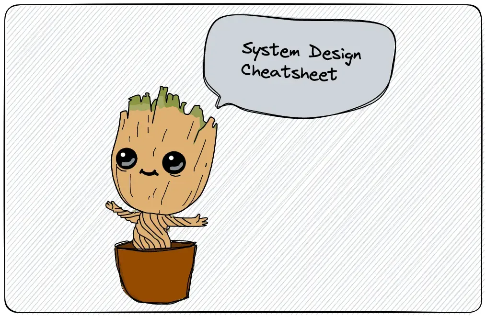
Disclaimer: The system design questions are subjective. This cheat sheet is a work in progress and is written based on my research on the topic. Feel free to share your feedback and suggestions in the comments. Some of the linked resources are affiliates. As an Amazon Associate, I earn from qualifying purchases.
Download my system design playbook for free on newsletter signup:
System Design Template
| Requirements | Functional Requirements | |
| Non-Functional Requirements | ||
| Daily Active Users | ||
| Read-to-Write Ratio | ||
| Usage Patterns | ||
| Peak and Seasonal Events | ||
| Database | Data Model | |
| Entity Relationship Diagram | ||
| SQL | ||
| Type of Database | ||
| API Design | HTTP Verb | |
| Request-Response Headers | ||
| Request-Response Contract | ||
| Data format | JSON | |
| XML | ||
| Protocol Buffer | ||
| Capacity Planning | Query Per Second (Read-Write) | |
| Bandwidth (Read-Write) | ||
| Storage | ||
| Memory | Cache (80-20 Rule) | |
| High Level Design | Basic Algorithm | |
| Data Flow | Read-Write Scenario | |
| Tradeoffs | ||
| Alternatives | ||
| Network Protocols | TCP | |
| UDP | ||
| REST | ||
| RPC | ||
| WebSocket | ||
| SSE | ||
| Long Polling | ||
| Cloud Patterns | CQRS | |
| Publish-Subscribe | ||
| Serverless Functions | ||
| Data Structures | CRDT | |
| Trie | ||
| Design Deep Dive | Single Point of Failures | |
| Bottlenecks (Hot spots) | ||
| Concurrency | ||
| Distributed Transactions | Two-Phase Commit | |
| Sagas | ||
| Probabilistic Data Structures | Bloom Filter | |
| HyperLogLog | ||
| Count-Min Sketch | ||
| Coordination Service | Zookeeper | |
| Logging | ||
| Monitoring | ||
| Alerting | ||
| Tracing | ||
| Deployment | ||
| Security | Authorization | |
| Authentication | ||
| Consensus Algorithms | Raft | |
| Paxos | ||
| Components | DNS | |
| CDN | Push-Pull | |
| Load Balancer | Layer 4-7 | |
| Active-Active | ||
| Active-Passive | ||
| Reverse Proxy | ||
| Application Layer | Microservice-Monolith | |
| Service Discovery | ||
| SQL Data Store | Leader-Follower | |
| Leader-Leader | ||
| Indexing | ||
| Federation | ||
| Sharding | ||
| Denormalization | ||
| SQL Tuning | ||
| NoSQL Data Store | Graph | |
| Document | ||
| Key-Value | ||
| Wide-Column | ||
| Message Queue | ||
| Task Queue | ||
| Cache | Query-Object Level | |
| Client | ||
| CDN | ||
| Webserver | ||
| Database | ||
| Application | ||
| Cache Update Pattern | Cache Aside | |
| Read Through | ||
| Write Through | ||
| Write Behind | ||
| Refresh Ahead | ||
| Cache Eviction Policy | LRU | |
| LFU | ||
| FIFO | ||
| Clocks | Physical clock | |
| Lamport clock (logical) | ||
| Vector clock |
Further system design learning resources
Download my system design playbook for free on newsletter signup:
Data Store
SQL
The most popular SQL queries asked in system design interviews are SELECT, JOIN, INSERT, and GROUP BY statements.
Insert new records in a table
Insert data in specific columns
|
|
Insert data in all columns
|
|
Select data from a database
Select all columns from the table
|
|
Select specific columns from the table
|
|
Select records that fulfill a specific condition
|
|
Sort the result set in ascending or descending order
|
|
Combine records from two or more tables based on a related column
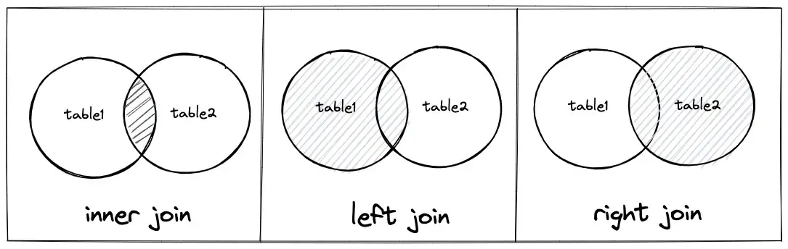
Select the records that have matching values in both tables
|
|
Select all records from the left table, and the matched records from the right table
|
|
Select all records from the right table, and the matched records from the left table
|
|
Group rows that have the same values into summary rows
|
|
The following aggregate functions are used with the GROUP BY statement to group the result set by one or more columns:
- COUNT()
- MAX()
- MIN()
- SUM()
- AVG()
Further system design learning resources
Download my system design playbook for free on newsletter signup:
Architecture
Software architecture is about making reasonable trade-offs. The general guidelines to horizontally scale a service are the following:
- keep the service stateless
- partition the service
- replicate the service
The learning resources that I recommend to prepare for a software engineering interview can be found here.
Pastebin
You can read the detailed article on system design pastebin. Similar services: GitHub gist
Requirements
- The client must be able to upload text data and receive a unique URL
- The received URL is used to access the text data
Data storage
Database schema
- The primary entities of the database are the Pastes table, the Users table
- The relationship between the Users and the Pastes tables is 1-to-many
Type of data store
- The content of a paste is stored in a managed object storage such as AWS S3
- A SQL database such as Postgres or MySQL is used to store the metadata (paste URL) of the paste
High-level design
- The server generates a unique paste identifier (ID) for each new paste
- The server encodes the paste ID for readability
- The server persists the paste ID in the metadata store and the paste in the object storage
- When the client enters the paste ID, the server returns the paste
Write Path

- The client makes an HTTP connection to the server
- Writes to Pastebin are rate limited
- Key Generation Service (KGS) creates a unique encoded paste ID
- The object storage returns a presigned URL
- The paste URL (http://presigned-url/paste-id) is created by appending the generated paste ID to the suffix of the presigned URL
- The paste content is transferred directly from the client to the object storage using the paste URL to optimize bandwidth expenses and performance
- The object storage persists the paste using the paste URL
- The metadata of the paste including the paste URL is persisted in the SQL database
- The server returns the paste ID to the client for future access
Read Path
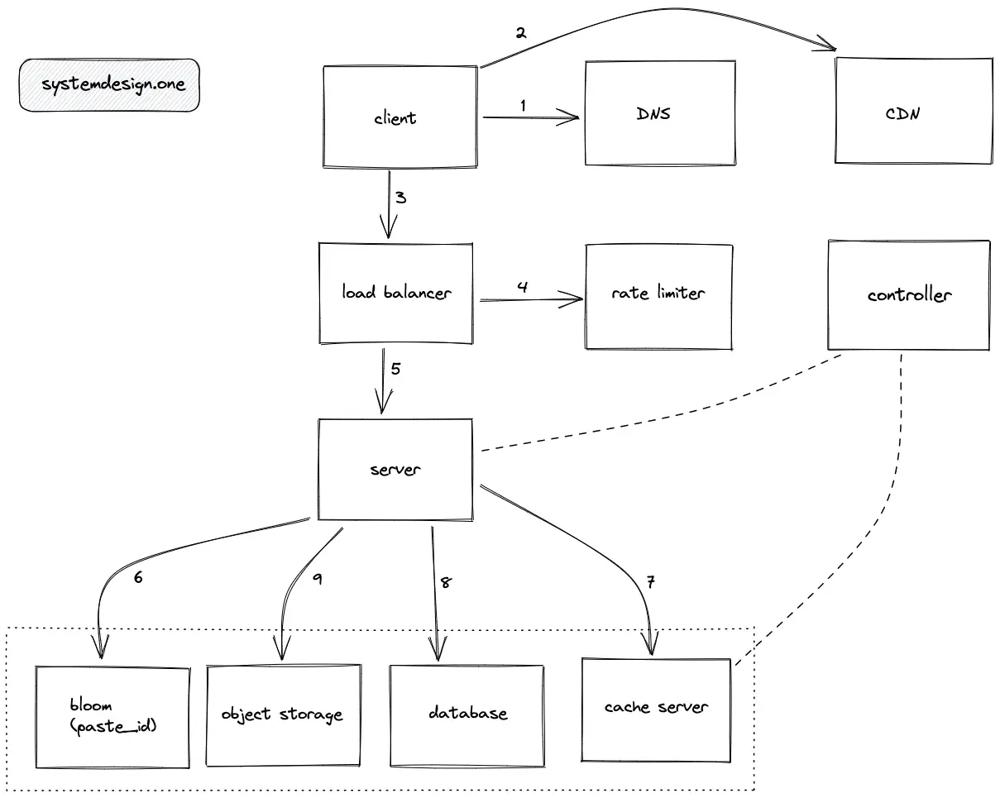
- The client executes a DNS query to identify the server
- The CDN is queried to verify if the requested paste is in the CDN cache
- The client makes an HTTP connection to the load balancer or the reverse proxy server
- The read requests are rate limited
- The load balancer delegates the client connection to the server with free capacity
- The server verifies if the paste exists by querying the bloom filter
- If the paste exists, check if the paste is stored in the cache server
- Fetch the metadata for the paste from the SQL database
- Fetch the paste content from the object storage using the metadata
Further system design learning resources
Download my system design playbook for free on newsletter signup:
Facebook Newsfeed
The keywords newsfeed and timeline are used interchangeably. Some of the similar services to Facebook Newsfeed are the following:
- Twitter Timeline
- Instagram feed
- Google podcast feed
- Google news timeline
- Etsy feed
- Feedly
- Reddit feed
- Medium feed
- Quora feed
- Hashnode feed
Requirements
- The user newsfeed must be generated in near real-time based on the feed activity from the people that a user follows
- The feed items contain text and media files (images, videos)
Data storage
Database schema
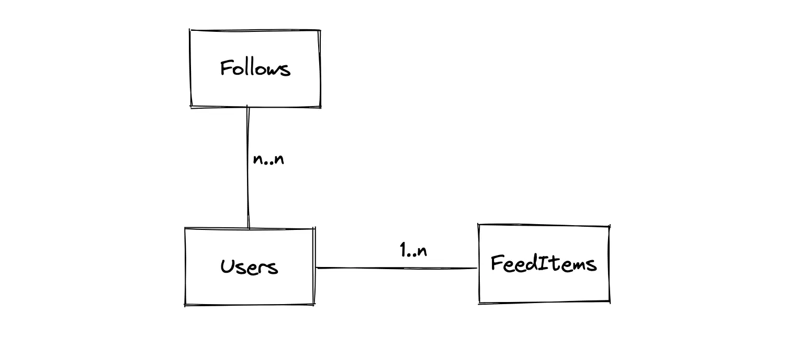
- The primary entities of the database are the Users table, the FeedItems table, and the Follows table
- The relationship between the Users and the FeedItems tables is 1-to-many
- The relationship between the Users and the Follows tables is many-to-many
- The Follows is a join table to represent the relationship (follower-followee) between the users
Type of data store
- The media files (images, videos) are stored in a managed object storage such as AWS S3
- A SQL database such as Postgres stores the metadata of the user (followers, personal data)
- A NoSQL data store such as Cassandra stores the user timeline
- A cache server such as Redis stores the pre-generated timeline of a user
High-level design
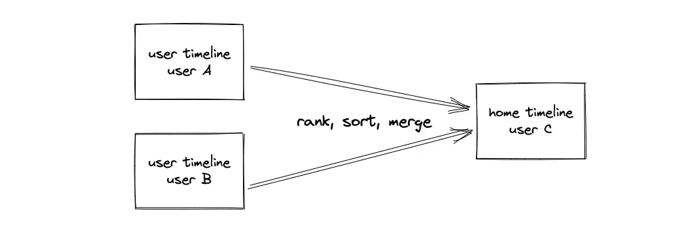
- The server stores the feed items in cache servers and the NoSQL store
- The newsfeed generated is stored on the cache server
- There is no feed publishing for inactive users but uses a pull model (fanout-on-load)
- The feed publishing for active non-celebrity users is based on a push model (fanout-on-write)
- The feed publishing for celebrity users is based on a hybrid push-pull model
- The client fetches the newsfeed from the cache servers
Write Path
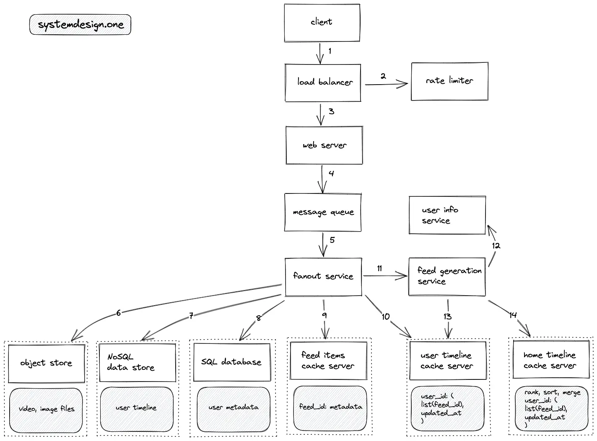
- The client creates an HTTP connection to the load balancer to create a feed item
- The write requests to create feed items are rate limited
- The load balancer delegates the client connection to a web server with free capacity
- The feed item is stored on the message queue for asynchronous processing and the client receives an immediate response
- The fanout service distributes the feed item to multiple services to generate the newsfeed for followers of the client
- The object store persists the video or image files embedded in the feed item
- The NoSQL store persists the timeline of users (feed items in reverse chronological order)
- The SQL database stores the metadata of the users (user relationships) and the feed items
- A limited number of feed items for users with a certain threshold of followers are stored on the cache server
- The IDs of feed items are stored on the user timeline cache server for deduplication
- The feed generation service subscribes to the fanout service for any updates
- The feed generation service queries the in-memory user info service to identify the followers of a user and the category of a user (active non-celebrity users, inactive, celebrity users)
- The feed generation service creates the home timeline for active non-celebrity users using a push model (fanout-on-write) in linear time O(n), where n is the number of followers
- The feed items are ranked, sorted, and merged to generate the home timeline for a user
- The home timeline for active users is stored on the cache server for quick lookups
- There is no feed publishing for inactive users but uses a pull model (fanout-on-load)
- The feed publishing for celebrity users is based on a hybrid push-pull model (merge celebrity feed items to the home timeline of a user on demand)
- As an alternative, the feed publishing for celebrity users can use a push model only for the online followers in batches (not optimal solution)
Read Path
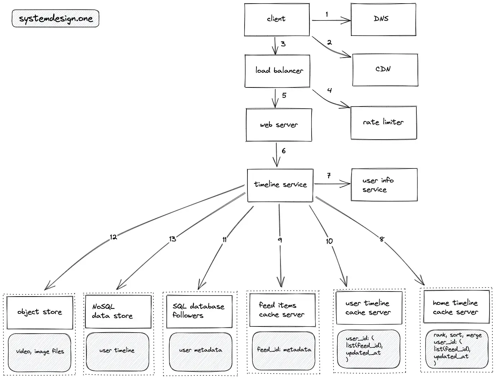
- The client executes a DNS query to resolve the domain name
- The client queries the CDN to check if the feed items for the home timeline are cached on the CDN
- The client creates an HTTP connection to the load balancer
- The read requests to fetch the newsfeed are rate limited
- The load balancer delegates the client connection to a web server with free capacity
- The web server queries the timeline service to fetch the newsfeed
- The timeline service queries the user info service to get the list of followee and identify the category of the user (active, inactive, following celebrities)
- The home timeline cache is queried to fetch the list of feed item IDs
- The feed items are fetched from the feed items cache server by executing an MGET operation on Redis
- When the client executes a request to fetch the timeline of another user, the timeline service queries the user timeline cache server
- The SQL database follower (replica) is queried on a cache miss
- The media files embedded on feed items are fetched from the object store
- The NoSQL data store is queried to fetch the user timeline on a cache miss
- The inactive users fetch the home timeline using a pull model (fanout-on-load)
- The active users following celebrity users use a hybrid model to fetch the home timeline (the feed items from celebrities are merged on demand)
Further system design learning resources
Download my system design playbook for free on newsletter signup:
Twitter Search
Some of the similar services to Twitter Search are the following:
- Facebook Search
- YouTube search
- Reddit search
- Google news search
Requirements
- Persist user status
- Query user status in near real-time
Data storage
Database schema
A positional inverted index is used to store the index.
Type of data store
- The archived data objects are stored on HDFS
- Lucene-based inverted index data store such as Apache Solr or Elasticsearch is used to store index data
High-level design
- The fanout service queries the real-time index and the archive index to identify the relevant data objects
- The fanout service queries the social graph service and user search service to filter the result data objects further
Read Path
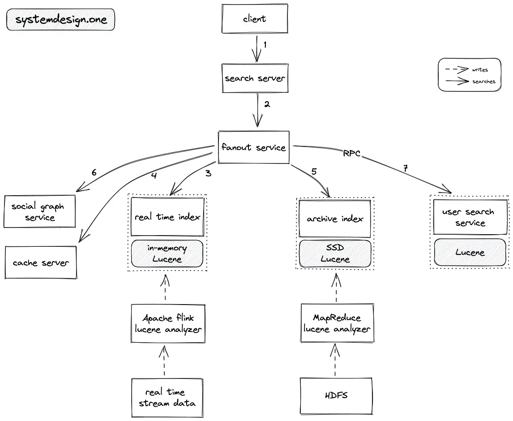
- The client establishes an HTTP connection to the search server, which parses and tokenizes the search query
- The search server delegates the search request to the fanout service
- The fanout service queries the real-time index to identify the relevant most recent data objects
- The fanout service queries the cache server to verify if the relevant archive index data is on the cache
- The fanout service queries the archive index to identify the relevant archived data objects
- The fanout service queries the social graph service to filter the result data objects by identifying the most relevant data objects to the user
- The fanout service queries the user search service to further filter the result data object by applying personalization based on the user search history
- The result data objects are merged by the fanout service and returned to the client
- Wait-free concurrency model with optimistic locking (the search index is updated while being read at the same time) is implemented to achieve high throughput for the search service
- RPC is used for internal communication between the system components to improve latency
Write Path
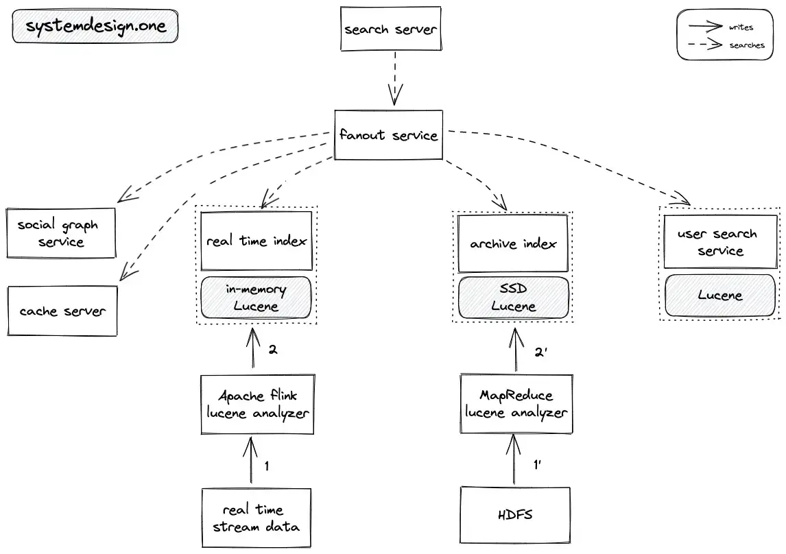
- The real-time stream is analyzed using Apache Flink to generate an in-memory Lucene index
- The real-time index keeps data that is at most a few weeks old
- MapReduce (Hadoop) jobs are executed on archive data objects stored on HDFS
- The Lucene-based archive index is stored on the SSD
- The Lucene-based user search service is updated depending on the search history of the user
- The multithreading in search service is implemented through a single writer thread and multiple reader threads
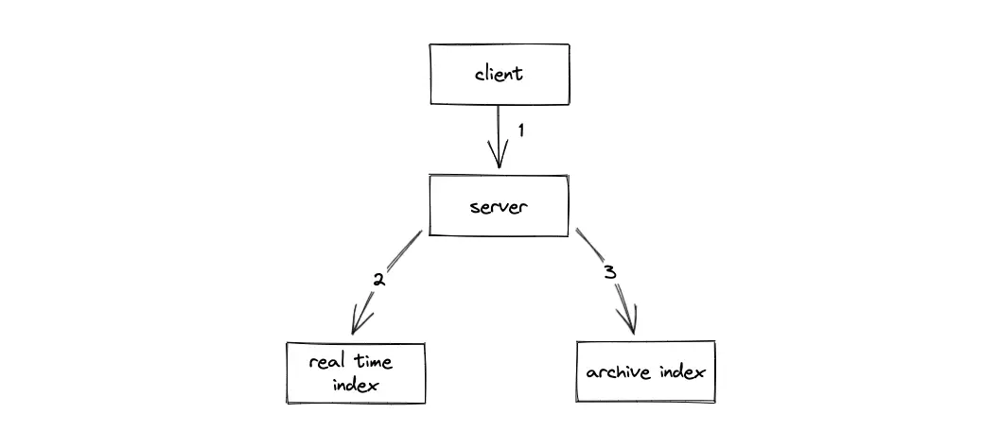
When the client updates or deletes any published data object, the server updates the real-time index and archive index.
Further system design learning resources
Download my system design playbook for free on newsletter signup:
Tagging Service
Some of the popular tagging services are the following:
- JIRA tags
- Confluence tags
- Stackoverflow tags
- Twitter hashtags
Requirements
- Tag an item
- View the items with a specific tag in near real-time
- Scalable
Data storage
Database schema
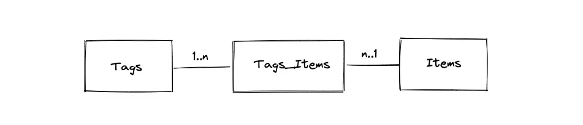
- The primary entities of the database are the Tags table, the Items table, and the Tags_Items table
- The Tags_Items is a join table to represent the relationship between the Items and the Tags
- The relationship between the Tags and the Items tables is many-to-many
Type of data store
- The media files (images, videos) and text files are stored in a managed object storage such as AWS S3
- A SQL database such as Postgres stores the metadata on the relationship between tags and items
- A NoSQL data store such as MongoDB stores the metadata of the item
- A cache server such as Redis stores the popular tags and items
High-level design
- When a new item is tagged, the metadata is stored on the SQL database
- The popular tags and items are cached on dedicated cache servers to improve latency
- The non-popular tags and items are fetched by querying the read replicas of SQL and NoSQL data stores
Write Path
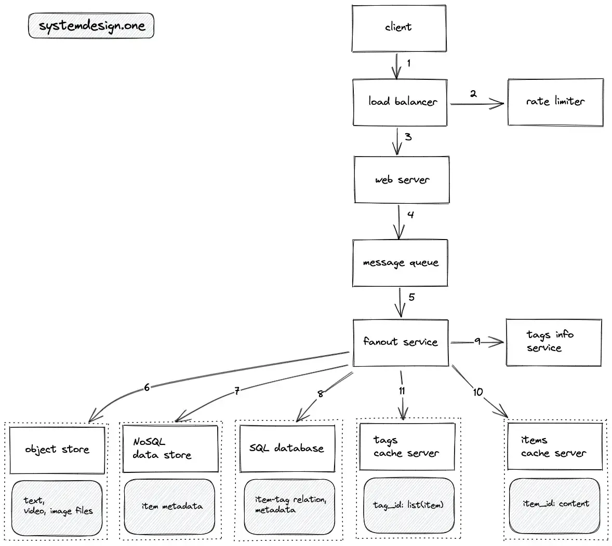
- The client makes an HTTP connection to the load balancer
- The write requests to create an item or tag an item are rate limited
- The load balancer delegates the client request to a web server with free capacity
- The write requests are stored on the message queue for asynchronous processing and improved fault tolerance
- The fanout service distributes the write request to multiple services to tag an item
- The object store persists the text files or media files embedded in an item
- The NoSQL data store persists the metadata of an item (comments, upvotes, published date)
- The SQL database persists metadata on the relationship between tags and items
- The tags info service is queried to identify the popular tags
- If the item was tagged with a popular tag, the item is stored on the items cache server
- The tags cache server stores the IDs of items that were tagged with popular tags
- LRU cache is used to evict the cache servers
- The data objects (items and tags) are replicated across data centers at the web server level to save bandwidth
Read Path
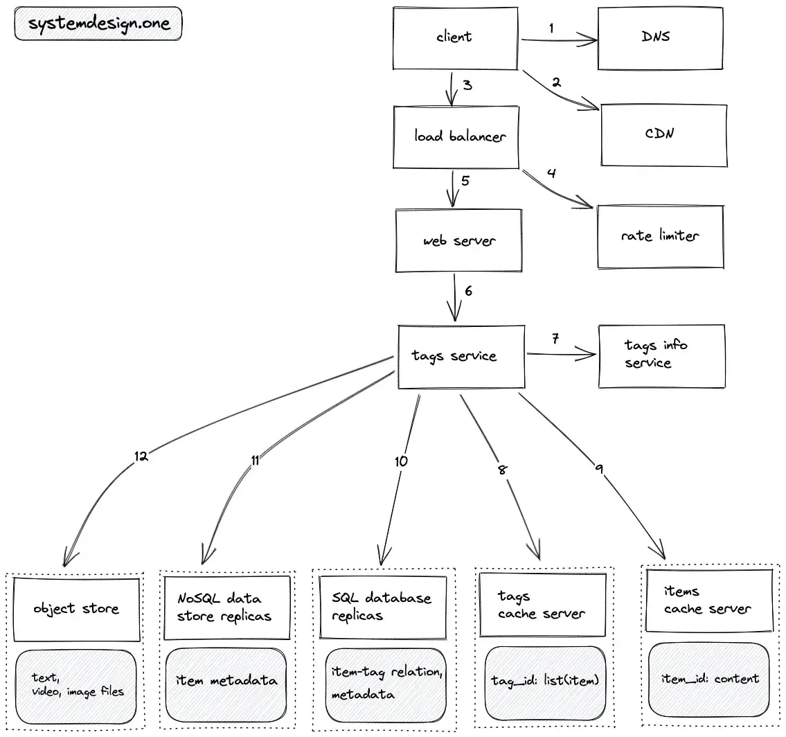
- The client executes a DNS query to resolve the domain name
- The client queries the CDN to check if the tag data is cached on the CDN
- The client creates an HTTP connection to the load balancer
- The read requests to fetch the tags or items are rate limited
- The load balancer delegates the client request to a web server with free capacity
- The web server queries the tags service to fetch the tags
- The tags service queries the tags info service to identify if the requested tag is popular
- The lists of tagged items for a popular tag are fetched from the tags cache server
- The tags service executes an MGET Redis request to fetch the relevant tagged items from the items cache server
- The list of items tagged with non-popular tags is fetched from the read replicas of the SQL database
- The items tagged with non-popular tags are fetched from the read replicas of the NoSQL data store
- The media files embedded in an item are fetched from the object store
- The trie data structure is used for typeahead autosuggestion for search queries on tags
Further system design learning resources
Download my system design playbook for free on newsletter signup:
API Rate Limiter
The Internet-scale distributed systems implement an API rate limiter for high availability and security.
Requirements
- Throttle requests exceeding the rate limit
- Distributed rate limiter
Data storage
Database schema
The NoSQL document store such as MongoDB is used to store the rate limiting rules and the throttled data
Type of data store
- The NoSQL document store such as MongoDB stores the rate-limiting rules and the throttled data
- The cache server such as Redis stores the rate-limiting rules and throttling data in-memory for faster lookups
- The message queue stores the dropped requests for analytics and auditing purposes
High-level design
- The cookie, user ID, or IP address is used to identify the client
- The rate limiter drops the request and returns the status code “429 too many requests” to the client if the throttling threshold is exceeded
- The rate limiter delegates the request to the API server if the throttling threshold is not exceeded
Throttling type and algorithms
| Throttling type | Algorithms |
|---|---|
| Soft throttle |
|
| Hard throttle |
|
| Dynamic throttle | all of the above with an additional system query to check for free resources |
Workflow
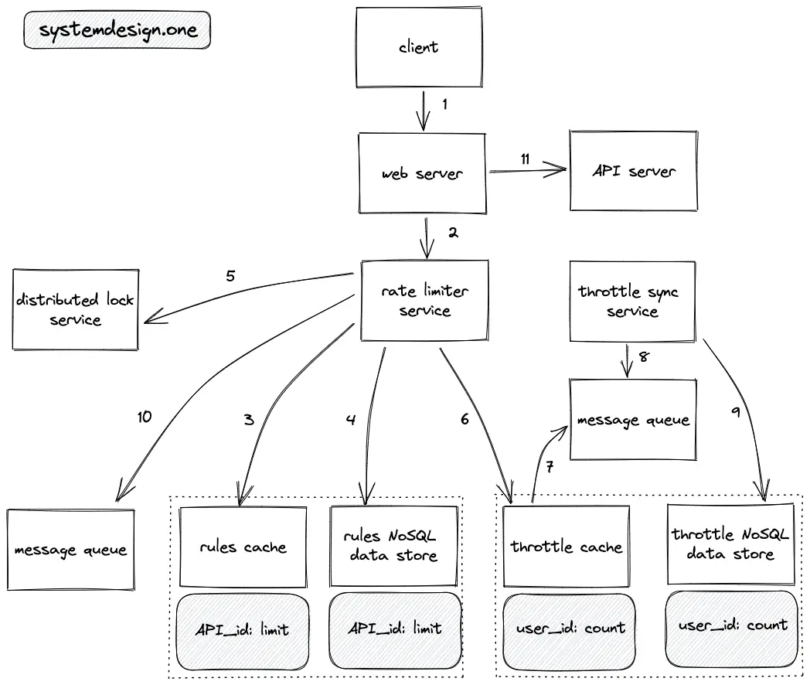
- The client creates an HTTP connection to the web server
- The web server forwards the request to the rate limiter service
- The rate limiter service queries the rules cache to check the rate limit rule for the requested API endpoint
- The read replicas of rules NoSQL data store are queried on a cache miss to identify the rate limit rule
- The distributed lock such as Redis lock is used to handle concurrency when the same user makes multiple requests at the same time in a distributed system
- The rate limiter service queries the throttle cache to verify if the throttle threshold is exceeded
- The throttle cache uses a write-behind (write-back) cache pattern by storing the throttle data on the message queue to improve the latency
- The throttle sync service executes a batch operation to store the throttle data on the message queue to the NoSQL document store
- The NoSQL document stores persist the throttle data for fault tolerance, long-living rate limits, analytics, and auditing
- The dropped requests (throttle threshold exceeded) are stored on the message queue for analytics and auditing
- If the client request is not exceeding the throttle limit, the rate limiter delegates the client request to the API server
- LRU cache eviction is used for cache servers
- HTTP response headers indicate the relevant throttle limit data
- Consistent hashing is used to redirect the request from a user to the same subset of servers
Further system design learning resources
Download my system design playbook for free on newsletter signup:
Distributed Job Scheduler
The keywords job and task are used interchangeably. Some of the popular job schedulers are the following:
- Apache Airflow
- Cron
Requirements
- Schedule and execute one-time or recurring jobs
- The job status and execution logs must be searchable
- The job scheduler is distributed
Data storage
Database schema
- The primary entities of the database are the Users table and the Tasks table
- The relationship between the Users and the Tasks tables is 1-to-many
- A database index must be created on the execution time of the tasks in the Tasks table to improve the latency of task execution
Type of data store
- The binary executable files of the tasks are stored in a managed object storage such as AWS S3
- The message queue such as Apache Kafka is used as a dead-letter queue and for deduplication of task execution requests
- The cache server such as Redis keeps the next immediate tasks to be executed in a min-heap data structure based on the task execution time
- The SQL database such as Postgres stores the task metadata
- The NoSQL data store such as Cassandra stores the task execution logs and task failure logs
- Apache Zookeeper is used for service discovery
High-level design
- The task scheduler triages the tasks based on the execution time of the task and keeps the next immediate tasks on the task cache
- The task scheduler stores the metadata of all tasks on the SQL database
- The task executor fetches the next immediate task from the task cache and the worker node executes the task
- The task execution logs are stored on the NoSQL data store
Write Path
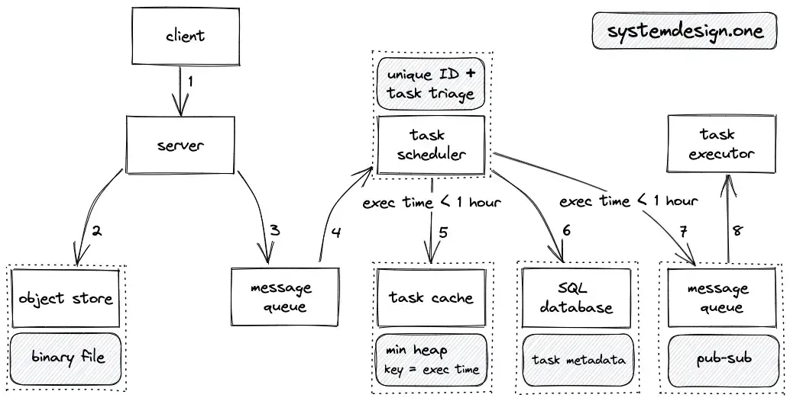
- The client creates an HTTP connection to the web server to schedule a task
- The binary executable file of the task is stored on the object store using the presigned URL
- The message queue stores the metadata of the task for asynchronous processing and fault tolerance
- The task scheduler triages the tasks based on the execution time and assigns a unique ID to the scheduled task
- If the execution time of the new task is within the next hour, the task is stored on the task cache as well as on the SQL database
- The metadata of the tasks are persisted on the SQL database for durability and fault tolerance
- If the execution time of the new task is within the next hour, the task executor is notified using the message queue publish-subscribe pattern
- Task cache implements a min-heap data structure based on the execution time of the task using the Redis sorted set
- The min-heap data structure on the task cache allows logarithmic time complexity O(log n) for the scheduling and execution of tasks and constant time complexity O(1) for checking the execution time of the next immediate task
- The task executor runs periodically (every half an hour) to update the task cache with the next immediate tasks on the SQL database
- LRU cache eviction is used for the task cache
Read Path
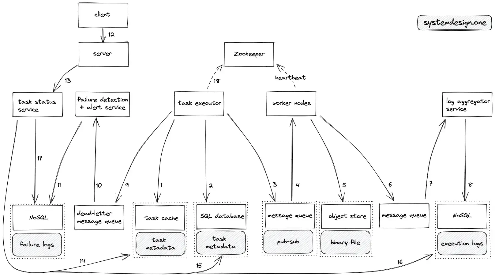
- The task executor queries the task cache to fetch the next immediate task at the top of the min-heap
- On failover, the task executor queries the SQL database replicas to fetch the next immediate task to be executed
- The task executor persists the next immediate tasks on the message queue
- Worker nodes fetch the metadata of the next immediate tasks on the message queue through the publish-subscribe pattern
- The binary executable file of the task on the object store is fetched
- The task execution log is stored on the message queue for asynchronous processing
- The log aggregator service processes the execution logs
- The task execution logs are persisted on the NoSQL data store
- The metadata of failed tasks are stored on the dead-letter message queue for further analysis
- The alerting service is notified of the failure and the failure detection service further processes the failed task data
- The logs of the failed tasks are stored on the NoSQL data store
- The client creates an HTTP connection to the web server to view the status of a task
- The web server delegates the request to the task status service
- The task status queries the task cache to view the status of an ongoing task
- The task status queries the SQL database to view the status of an executed task
- The task status queries the NoSQL data store to view the execution logs of a task
- The task status queries the NoSQL data store to view the logs of a failed task
- The system components such as the worker nodes send regular heartbeats to Apache Zookeeper for fault tolerance
- The task cache uses the write-behind (write-back) caching pattern to persist the task status on the SQL database
- Multithreading is implemented to parallelize and increase the throughput across a single machine
- The condition variable must be implemented on the task executor service to wake up the thread when the execution time of the next immediate task has elapsed
- Atomic clocks can be used to synchronize the system time across worker nodes
- Database rows must be locked by the task executor service to prevent the distribution of the same task to multiple task executor instances
- The task executor must acquire a lock or a semaphore on the task cache data structure to prevent the distribution of the same task to multiple task executor instances
- The task cache can be partitioned using consistent hashing (key = minute of the execution time)
Further system design learning resources
Download my system design playbook for free on newsletter signup:
Distributed Web Crawler
Some of the popular distributed web crawlers are the following:
- Google bot
- Bing bot
- Apache Nutch
Requirements
- An automated web crawler to crawl through the HTML files on the internet
- The web crawler is distributed
- The web crawler must start crawling from a set of seed webpages
- The web crawler must be polite to websites (obey the robots.txt file)
Data storage
Database schema
- The content store persists the document IDs and document content
- The seed URL store persists a list of seed URLs
- The URL store persists the list of URLs to crawl and the source URLs
Type of data store
- The URL storage persists an extracted list of URLs on a NoSQL data store such as HBase or HDFS
- The crawled content is stored in a managed object storage such as AWS S3 or on a NoSQL data store such as Apache HBase or Cassandra
- DNS persists domain names and the IP addresses
- The seed URL storage persists a list of seed URLs on a NoSQL data store such as Cassandra or HDFS
- The message queue such as Apache Kafka is used as the dead-letter queue
- The cache server such as Redis keeps the fresh crawled documents in memory for quicker processing
- The NoSQL data store such as Cassandra or an object store such as AWS S3 stores the content of crawled web pages
- Apache Zookeeper is used for service discovery
High-level design
At a high level, the web crawler executes steps 2 and 3 repeatedly.
- The fetcher service crawls the URLs on the seed store
- The extracted outlinks (URLs) on the crawled website are stored on the URL store
- The fetcher service crawls the URLs on the URL store
- The crawler uses the BFS algorithm
Workflow
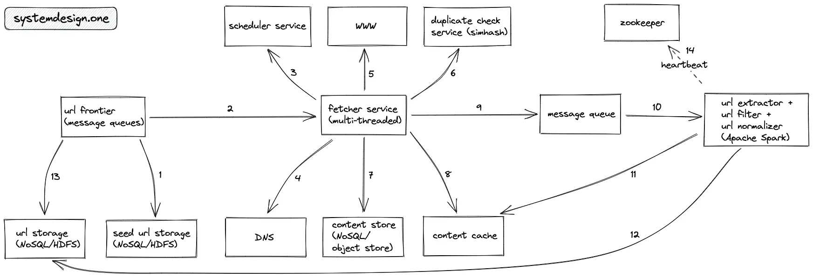
- The URL frontier queries the seed URL storage to fetch a list of URLs to be crawled
- The URL frontier prioritizes the URLs to be crawled
- The fetcher service queries the scheduler service to check if the URL has a predefined crawl schedule
- The local DNS service is queried to identify the IP address of the origin server
- The fetcher service server-side renders the web pages
- The duplicate check service is queried to check for duplicate content on the web page
- The fetcher service compresses the crawled web page and stores it on the content store for further processing such as building an inverted index
- The fetcher service stores the crawled web page on the content cache for immediate processing
- The fetcher service publishes the document ID to the message queue for asynchronous processing of the crawled web pages
- The URL processor is informed about the crawled web page using the publish-subscribe pattern
- The URLs are extracted, filtered, and normalized from the crawled web page by querying the content cache
- The extracted URLs are stored on the URL storage for future crawling
- The URL frontier queries the URL storage to fetch the URLs to crawl
- The services sent heartbeat signals to the Apache zookeeper for improved fault tolerance
- Only limited HTTP connections are created to an origin server to improve the politeness of the crawler
- The local DNS service is used to improve latency
- The URL frontier uses message queues to prioritize the URLs to be crawled and improve the politeness of the crawler
- The fetcher service is multi-threaded to concurrently crawl multiple webpages
- The fetcher service performs server-side rendering of the web pages to handle the dynamic web pages
- The URL extractor, URL filter, and URL normalizer service runs on Apache Spark (MapReduce) jobs to improve throughput
- The publish-subscribe pattern among services is implemented using the message queue
- The message queue implements the backpressure pattern to improve the fault tolerance
- The duplicate check service uses the simhash algorithm to detect the similarity in the content on the web pages
- Consistent hashing is used to partition the content cache (key = document ID)
- The read replicas of the content cache serve the latest documents for further processing
- RPC is used for internal communication to improve latency
- The stateful services are periodically checkpointed to improve the fault tolerance
- The sitemap.xml file is used by the webmaster to inform the web crawler about the URLs on a website that is available for crawling
- The robots.txt file is used by the webmaster to inform the web crawler about which portions of the website the crawler is allowed to visit
- The web pages are fetched and parsed in stream jobs using Apache Flink to improve throughput
- The web pages are ranked and further processed in batch jobs on Apache Spark
- The bloom filter is used by the URL processor (extract, filter, normalizer) to verify if the URL was crawled earlier
- The fetcher service skips crawling the non-canonical URLs but instead crawls the related canonical links
- The Apache Gora is used as an SQL wrapper for querying the NoSQL data store
- The Apache Tika is used to detect and parse multiple document formats
- The web pages that return a 4XX or 5XX status code are excluded from crawling retries
- The redirect pages are crawled on the HTTP 3XX response status code
- The scheduler service returns a fixed or adaptive schedule based on the sitemap.xml file definition
- The user-agent HTTP header in the request is set to the name of the crawler
- The web crawler is distributed geographically to keep the crawler closer to the origin servers of the website to improve latency
- The storage services are distributed and replicated for durability
URL Frontier
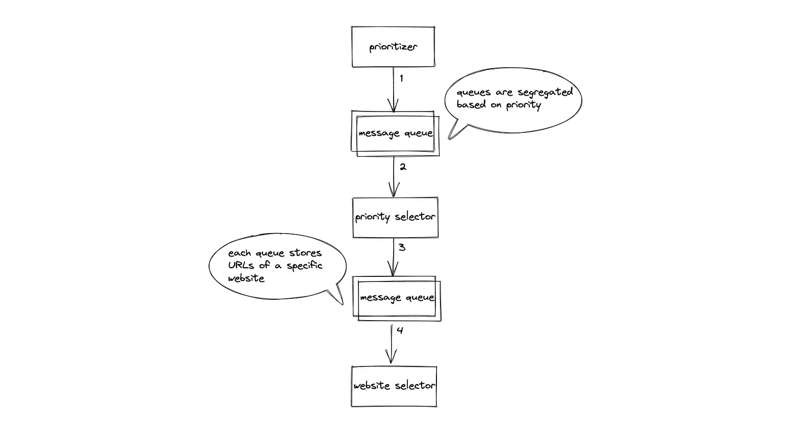
The prioritizer service puts the URLs based on the priority in distinct message queues. The online page importance calculation (OPIC) or link rank is used to assign priority to the URLs. Consistent hashing can be used to distribute the URLs across message queues.
The priority selector service fetches the URLs on the high-priority queue and puts the URLs of a specific website on a single message queue for sequential crawling. Sequential crawling improves the politeness of the crawler.
Further system design learning resources
Download my system design playbook for free on newsletter signup:
Color Picker
Requirements
- The user can pick a few colors and save the colors in a favorite list
- The user can update the favorite colors list
- The user can share the favorite list of colors with other users through email
- The user can define the access control list (users who can view) on the favorite list
Data storage
Database schema
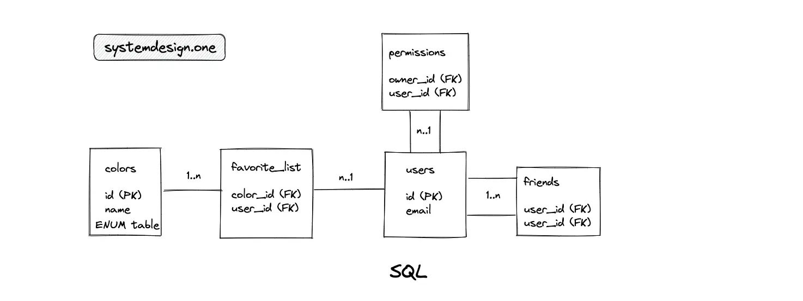
- The primary entities are the colors, users, and permissions table
- The favorite_list is a join table between the colors and users table
- The relationship between the colors and users tables is many-to-many
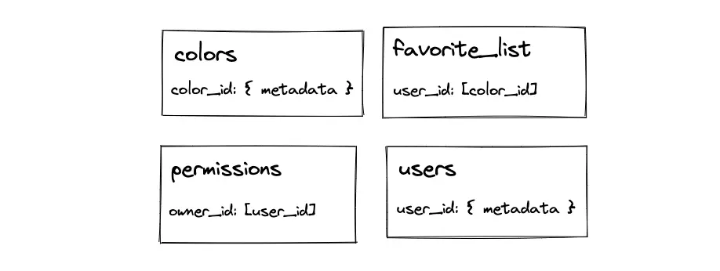
- The favorite list of colors and permissions are stored in a list data type
- The metadata of colors (hex code, color name) and users are stored as the object data type
Type of data store
- The NoSQL document store such as MongoDB is used assuming there is no requirement to support transactions
- The Apache Gora is used as an SQL wrapper for querying the MongoDB
- Apache Zookeeper is used for service discovery
High-level design
- The favorite list of colors is stored on the data store
- The user shares the favorite list with other users using the generated URL
- The server verifies if the current user is granted permission to view the favorite list
- The cache servers are queried to retrieve the favorite list
- On a cache miss, the data store is queried to retrieve the favorite list of colors
Write Path
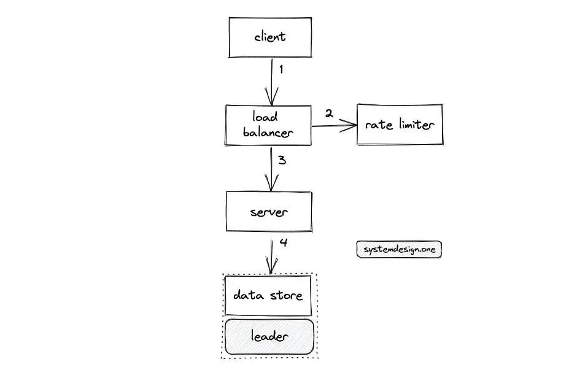
- The client creates an HTTP connection to the load balancer
- Write requests to update the favorite list are rate limited
- The load balancer delegates the write request to a server with free capacity
- The server persists the favorite list of colors on the data store (leader)
- Consistent hashing is used to partition the data store (key = user ID)
- The data is replicated across multiple data centers at the write server level
- The load balancer is configured in the active-passive mode for high availability
Read Path
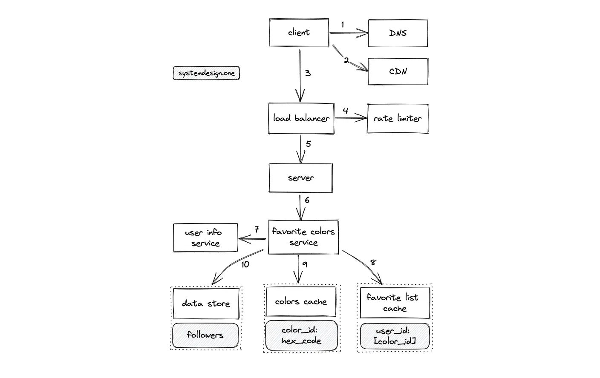
- The client executes a DNS query to identify the IP address of the server
- The CDN is queried to check if the requested favorite list is in the CDN cache
- The client makes an HTTP connection to the load balancer
- The read requests for viewing the favorite list are rate limited
- The load balancer delegates the client request to a server with free capacity
- The server queries the favorite colors service to fetch the favorite list
- The favorite colors service queries the user info service to verify if the client was granted permission to access the favorite list
- The favorite list cache is queried to fetch the list of color IDs of the favorite list
- The favorite colors service executes an MGET Redis request to fetch the color metadata using color IDs on the colors cache
- On a cache miss, the read replicas (followers) of the data store are queried to fetch the favorite list
- Consistent hashing is used to partition the favorite list cache server (key = user ID)
- The read replicas (followers) of cache servers are queried to fetch the favorite list of colors
- A reasonable TTL must be set on the cache servers to invalidate the data
- When the user updates an existing favorite list of colors, the cache servers must be flushed for the data invalidation
- The cache aside pattern is used to populate the cache
- The LRU policy is used to evict the cache servers
- The user info service is an in-memory store of user permissions for quick access
Further system design learning resources
Download my system design playbook for free on newsletter signup:
Kanban Board
Some of the popular implementations of a Kanban board are the following:
- Trello
- JIRA board
- Microsoft Planner
- Asana board
Requirements
- The user can create lists and assign tasks on the Kanban board
- The user can see changes on the Kanban board in near real-time
- The user can make offline changes on the Kanban board
- The Kanban board is distributed
Data storage
Database schema
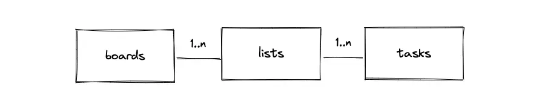
- The primary entities are the boards, the lists, and the tasks tables
- The relationship between the boards and lists tables is 1-to-many
- The relationship between the lists and tasks tables is 1-to-many
- An additional table is created to track the versions of the board
Type of data store
- Document store such as MongoDB persists the metadata of the tasks for improved denormalization support (ability to query and index subfields of the document)
- The transient data (board activity level) is stored on the cache server such as Redis
- The download queue for board activity is implemented using a message queue such as Apache Kafka
High-level design
- The changes on the Kanban board are synchronized in real-time through a WebSocket connection
- The offline client synchronizes the delta of changes when connectivity is reacquired
Workflow
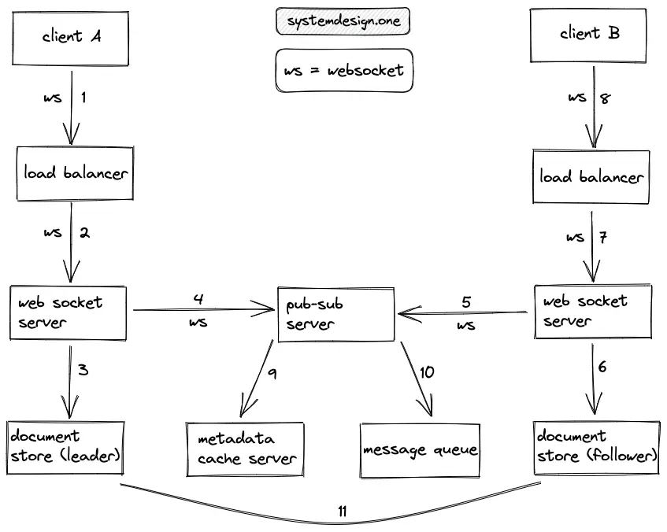
- The client-A creates a WebSocket connection on the load balancer to push changes in real-time
- The load balancer (HAProxy) uses the round-robin algorithm to delegate the client connection to a web socket server with free capacity
- The changes on the Kanban board are persisted on the document store
- Consistent hashing (key = board ID) is used to delegate the WebSocket connection to the relevant publish-subscribe (pub-sub) server
- The pub-sub server (Apache Kafka) delegates the WebSocket connection to the subscribed web socket servers
- The web socket server fetches the changes on the document store
- The WebSocket connection can make a duplex communication to the other listening clients through the load balancer
- The client-B receives the changes on the Kanban board
- The cache server stores the transient metadata such as the activity level of a session or the temporary authentication key
- The download queue to replay the changes in the sequential order (message ordering) is implemented using a message queue
- The changes are asynchronously propagated to the followers (replicas) of the document store to achieve eventual consistency
- The CDN serves the single-page dynamic application to the client to improve latency
- The single-page application is cached on the browser to improve the latency of the subsequent requests
- An event-driven architecture might be a good choice for the instant propagation of updates
- The client invokes the server logic through a thin wrapper over a WebSocket connection
- LRU policy is used to evict the cache servers
- The document store makes it relatively trivial to run different versions of the Kanban board against the same database without major DB schema migrations
- The document store is replicated using the leader-follower topology
- The online clients fetch the changes from the leader document store
- The offline clients fetch the changes from the followers of the document store
- The offline clients store the time-stamped changeset locally and send the delta of the changeset when the connectivity is reacquired
- The changeset is replayed in sequential order (message ordering) to prevent data hierarchy failures
- The client synchronizes only the recently viewed and the starred boards to improve the performance
- A new TCP WebSocket must be established on the server failure
- The last-write-win policy is used to resolve conflicts on the board
- Exponential backoff must be implemented on the synchronization service to improve the fault tolerance
Further system design learning resources
Download my system design playbook for free on newsletter signup:
Online Marketplace
The popular implementations of an online marketplace are the following:
- Amazon
- eBay
- Shopee
- TicketMaster
- Airbnb
Requirements
- The user can create an inventory of products in the store
- The users can search for products on the storefront
- The user can make the payment to purchase a product on the storefront
Data storage
Database schema
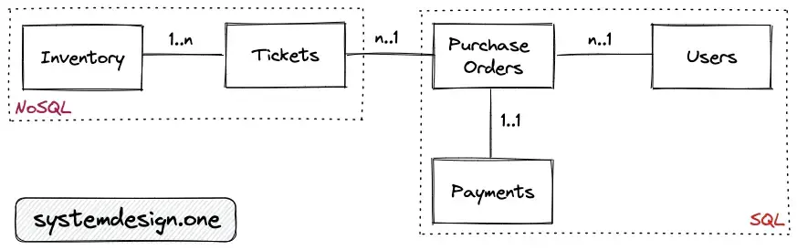
- The primary entities are the inventory, the tickets (products), the users, the payments, and the purchase orders tables
- The relationship between the inventory and the tickets table is 1-to-many
- The relationship between the purchase orders and the tickets table is 1-to-many
- The relationship between the users and the purchase orders table is 1-to-many
- The relationship between the purchase orders and the payments table is 1-to-1
Type of data store
- Document store such as MongoDB persists unstructured data like the inventory and the tickets data
- Document store such as Splunk persists the logs for observability
- SQL database such as Postgres persists the purchase orders, payments information, and users metadata for ACID compliance
- An object store such as AWS S3 is used to store media files (images, videos) related to the tickets
- A cache server such as Redis is used to store the transient data (session data and trending tickets)
- Message queue such as Apache Kafka temporarily stores the logs for asynchronous processing
- Lucene-based inverted index data store such as Apache Solr is used to store index data for search functionality
High-level design
- The purchase of a ticket is executed as a two-phase commit
- The materialized conflict or the distributed lock is used to handle concurrency when multiple users try to buy the same unique ticket
- The inverted index store provides the search functionality
- The high-profile events might put users into a virtual waiting room before they can view the ticket listings to improve fairness
Write Path
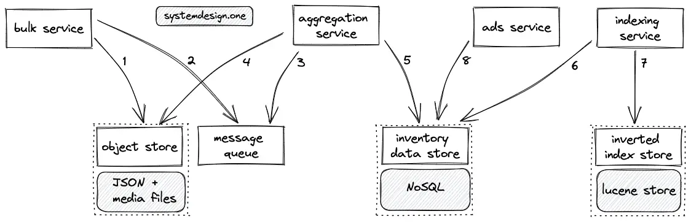
- The bulk service stores the JSON metadata files of the inventory and the related media files on the object store
- The bulk service puts the metadata on the message queue for an asynchronous processing
- The aggregation service is notified through the publish-subscribe pattern
- The aggregation service queries the object store to fetch the JSON files
- The aggregation service validates, normalizes the JSON data, and stores the transformed data on the inventory data store
- The indexing service executes a batch fetch operation on the inventory data store
- The indexing service transforms and stores the fetched data on the inverted index store
- The ads service queries the inventory data store to display advertisements to the users
Read Path
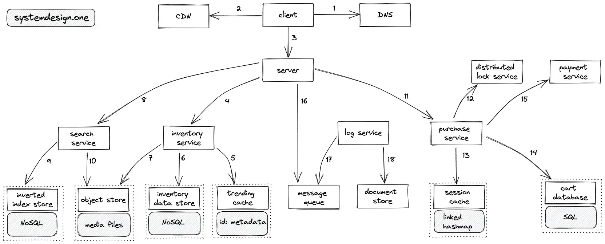
- The client queries the DNS for domain name resolution
- The CDN is queried to check if the requested ticket is in the CDN cache
- The client creates an HTTP connection to the server
- The server delegates the client’s request to view the ticket inventory
- The inventory service queries the trending cache to check if the requested ticket is on the cache
- The inventory service queries the read replicas of the inventory datastore on a cache miss
- The inventory service queries the object store to fetch the relevant media files of the ticket
- The server delegates the client’s request to search for a ticket
- The search service queries the inverted index store to fetch the relevant tickets
- The search service queries the object store to fetch the relevant media files
- The server delegates the client’s request to purchase a ticket
- The distributed lock defined with a short TTL is acquired to prevent concurrent users from purchasing the same unique ticket
- The purchase service stores the session data in a linked hashmap with a reasonable TTL on the session cache
- The purchase service stores the purchase information on the cart database and updates the inventory data store
- The purchase service invokes the payment service to process the financial transaction
- The server persists the logs on the message queue for asynchronous processing
- The log service fetches the logs on the message queue for further processing
- The log service aggregates the logs and stores the logs on the document store
- The operations (13–15) to purchase a ticket are executed as a two-phase commit to support rollback on failure
- Materialized conflict (alternative to distributed lock) is implemented by creating database rows for each ticket at the expense of storage costs and by acquiring a lock on database rows
- The operation of putting a ticket into the shopping cart or navigating to the payment page should temporarily reserve the tickets for a reasonable time frame
- Autoscaling of services and serverless components can be used to save costs by lowering operational complexity
- The pgbouncer can be used for connection pooling to Postgres
Further system design learning resources
Download my system design playbook for free on newsletter signup:
Chat Service
You can read the detailed article on Slack Architecture. The popular implementations of the chat service are the following:
Requirements
- The user (sender) can start a one-to-one chat conversation with another user (receiver)
- The sender can see an acknowledgment signal for receive and read
- The user can see the online status (presence) of other users
- The user can start a group chat with other users
- The user can share media (images) files with other users
Data storage
Database schema
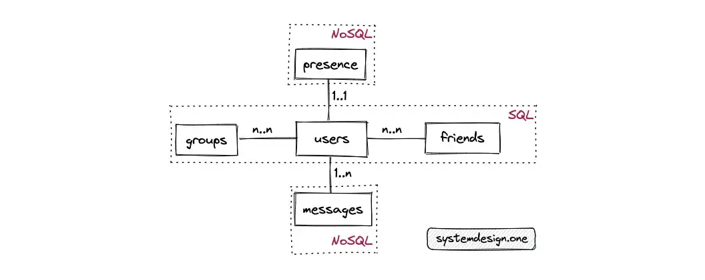
- The primary entities are the groups, the presence, the users, the friends, and the messages tables
- The relationship between the groups and users tables is many-to-many
- The relationship between the users and friends table is many-to-many
- The relationship between the users and the messages table is 1-to-many
- The relationship between the users and the presence table is 1-to-1
- The friends table is the join table to show the relationship between users
Type of data store
- SQL database such as Postgres persists the metadata (groups, avatar, friends, WebSocket URL) for ACID compliance
- NoSQL data store (LSM tree-based) such as Cassandra is used to store the chat messages
- An object store such as AWS S3 is used to store media files (images) included in the chat conversation
- A cache server such as Redis is used to store the transient data (presence status and group chat messages) to improve latency
- The publish-subscribe server is implemented using a message queue such as Apache Kafka
- The message queue stores the messages for asynchronous processing (generation of chat conversation search index)
- Lucene-based inverted index data store such as Apache Solr is used to store chat conversation search index to provide search functionality
High-level design
- The user creates an HTTP connection for authentication and fetching of the relevant metadata
- The WebSocket connection is used for real-time bidirectional chat conversations between the users
- The set data type by Redis provides constant time complexity for tracking the online presence of the users
- The object store persists the media files shared by the user on the chat conversation
Workflow
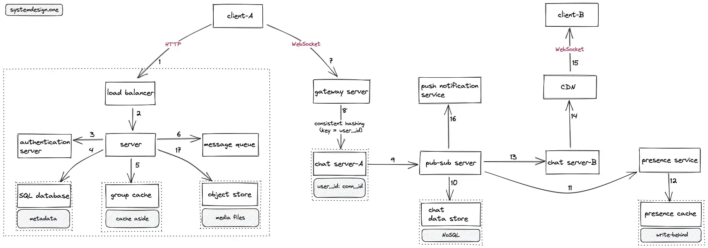
- The client creates an HTTP connection to the load balancer
- The load balancer delegates the HTTP request of the client to a server with free capacity
- The server queries the authentication service for the authentication of the client
- The server queries the SQL database to fetch the metadata such as the user groups, avatar, friends, WebSocket URL
- The server queries the group cache to fetch the group chat messages
- The server updates the message queue with asynchronous tasks such as the generation of the chat search index
- The client creates a WebSocket connection to the gateway server for real-time bidirectional chat conversations
- Consistent hashing (key = user_id) is used to delegate the WebSocket connection to the relevant chat server
- The chat server delegates the WebSocket connection to the pub-sub server to identify the chat server of the receiver
- The pub-sub server persists the chat messages on the chat data store for durability
- The pub-sub server queries the presence service to update the presence status of the user
- The presence service stores the presence status of the user on the presence cache
- The pub-sub server delegates the WebSocket connection to the chat server of the receiver
- The chat server relays the WebSocket connection through the CDN for group chat conversations
- The CDN delegates the (group) chat message to the receiver
- The pub-sub server invokes the push notification service to notify the offline clients
- The server stores the chat media files on the object store and the URL of the media file is shared with the receiver
- The admin service (not shown in the figure to reduce clutter) updates the pub-sub server with the latest routing information by querying the server
- The mapping between the user_id and WebSocket connection ID (used to identify the user WebSocket for delegation) is stored in the memory of the chat server
- The write-behind pattern is used to persist the presence cache on a key-value store
- The cache-aside pattern is used to update the group cache
- The presence cache is updated when the user connects to the chat server
- Consistent hashing (key = user_id) is used to partition the presence cache
- The offline client stores the chat message on the local storage until a WebSocket connection is established
- The background process on the receiver can retrieve messages for an improved user experience
- The clients must fetch the chat messages using pagination for improved performance
- The pub-sub server stores the chat message on the data store and forwards the chat message when the receiver is back online
- If the requirements are to keep the messages ephemeral on the server, a dedicated clean-up service is run against the replica chat data store to remove the delivered chat messages
- If the requirements are to keep the messages permanently on the server, the chat data store acts as the source of truth
- The one-to-one chat messages can be cached on the client for improved performance on future reads
- The replication factor of the chat data store must be set to at least a value of three to improve the durability
- The records in the presence cache are set with an expiry TTL of a reasonable time frame (5 minutes)
- The sliding window algorithm can be used to remove the expired records on the presence cache
- The last seen timestamp of the user is updated on the expiry of the records on the presence cache
- The stateful services are partitioned by the partition keys user_id or group_id and are replicated across data centers for high availability
- The hot shards can be handled by alerting, automatic re-partitioning of the shards, and the usage of high-end hardware
- The Apache Solr can be used to provide search functionality
- The publish-subscribe pattern is used to invoke job workers that run the search index asynchronously
- The SQL database can be configured in single-master with semi-sync replication for high availability
- The receive/read acknowledgment is updated through the WebSocket communication
- The chat messages are end-to-end encrypted using a symmetric encryption key
- The client creates a new HTTP connection on the crash of the server or the client
- The gateway server performs SSL termination of the client connection
Further system design learning resources
Download my system design playbook for free on newsletter signup:
Proximity Service
The popular implementations of the proximity service are the following:
- Tripadvisor
- Yelp
- Foursquare
- Google Maps
- Uber ETA
Requirements
- The client (creator) can add attractions (restaurants, markets)
- The client (user) can find all the nearby attractions within a given radius
- The users can view the relevant data and reviews of an attraction
Data storage
Database schema
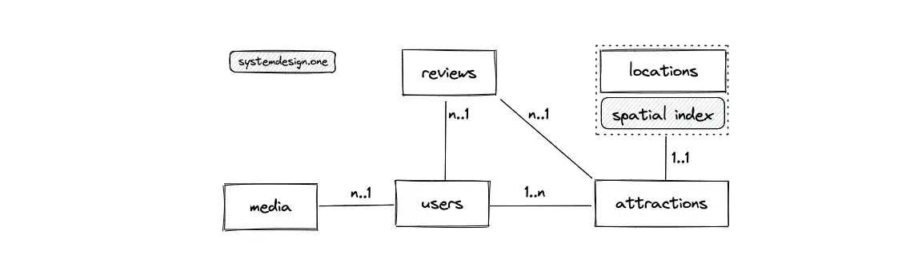
- The primary entities are the users, the media, the reviews, the locations, and the attractions tables
- The relationship between the users and the media table is 1-to-many
- The relationship between the users (creator) and attractions table is 1-to-many
- The relationship between the users and the reviews table is 1-to-many
- The relationship between the attractions and the reviews table is 1-to-many
- The relationship between the locations and the attractions table is 1-to-1
Type of data store
- SQL database such as Postgres persists the location data (latitude, longitude)
- The PostGIS extension of Postgres is used to generate the spatial index using Geohash or R-tree
- NoSQL data store such as MongoDB is used to store the metadata of an attraction
- An object store such as AWS S3 is used to store media files (images) of an attraction
- A cache server such as Redis is used to store the popular Geohashes and the locations
- A message queue such as Apache Kafka is used to orchestrate the asynchronous processing of the media files
- The Lucene-based inverted index data store such as Elasticsearch is used to store the search index to provide search functionality
- The Trie server is used to provide autocompletion functionality
High-level design
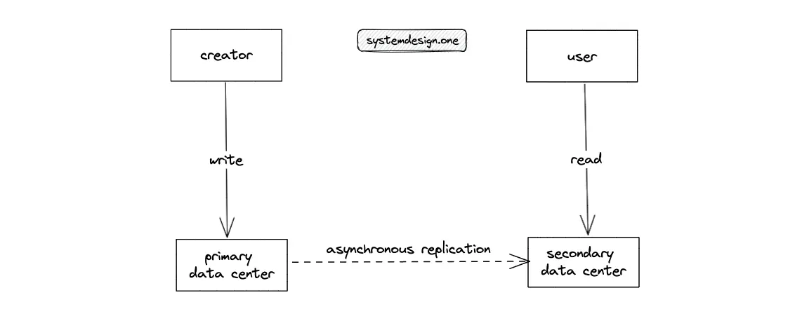
- The client (creator) updates the data stores (attraction and location) with the relevant metadata of an attraction by writing to the primary data center
- The DNS redirects the read requests from the client (user) to the secondary data centers to handle the read-heavy traffic
- The spatial index (Geohash) is used to identify the IDs of nearby attractions within a given radius
Write Path
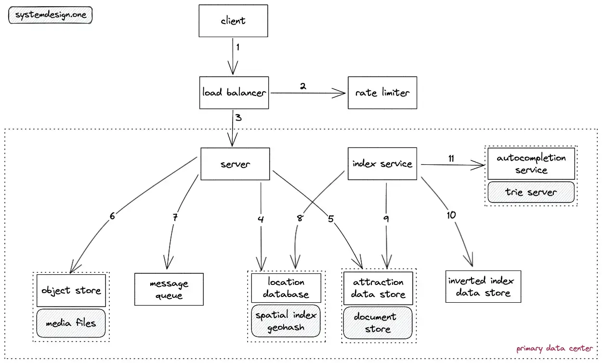
- The client (creator) creates an HTTP connection to the load balancer
- The write requests are rate limited for high availability
- The load balancer delegates the client HTTP request to a server in the nearby primary data center
- The latitude and longitude data of an attraction are added to the location database
- The metadata (description) of an attraction is added to the attraction data store
- The raw media files (images) are persisted on the object store
- The message queue is used for the asynchronous processing of the raw media files
- The index service fetches the Geohash and the ID of an attraction by querying the location database
- The index service fetches the metadata of an attraction by querying the attraction data store
- The index service stores the transformed metadata of an attraction on the inverted index store to provide the search functionality
- The index service updates the trie server to provide autocompletion functionality
- The spatial index is generated on the location database using Geohash
- The Geohash (string value) is calculated by encoding the latitude and longitude values
- Alternatively, the Quadtree data structure can be used to store the list of nearby attractions at the expense of an increased operational complexity
- The standard relational database as the location database will perform poorly due to float values in database queries
- The Geohash is performant because single index queries are faster and Geohash provides quicker proximity search
- The stateful services are partitioned by geographical data for high availability
- The compressed system logs are stored on the object store to save costs
- The financially sensitive data must have a higher replication factor for durability
Read Path
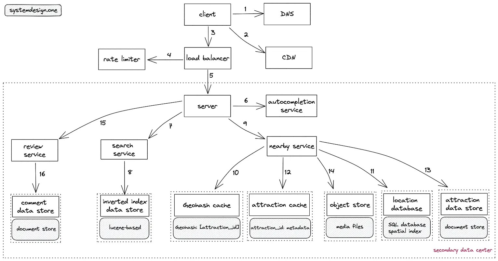
- The client (user) queries the DNS for domain name resolution
- The CDN is queried to check if the requested attraction is in the CDN cache
- The client creates an HTTP connection to the load balancer
- The read requests are rate limited to prevent malicious users
- The load balancer delegates the client request to the server in the nearby secondary data center
- The server queries the autocompletion service to provide relevant keyword suggestions
- The server forwards the search query of the client to the search service
- The search service queries the inverted index data store to find the relevant data records
- The server delegates the client’s request to find nearby attractions to the nearby service
- The nearby service calculates the Geohash of the request and queries the Geohash cache to fetch the list of nearby attraction IDs
- The location database (replica) is queried on a cache miss
- The nearby service queries the attraction cache to fetch the metadata of an attraction
- The attraction data store (replica) is queried on a cache miss
- The relevant media files are fetched by querying the object store
- The server queries the review service to fetch the relevant comments and ratings of an attraction
- The review service queries the comment data store (replica) to fetch the comments
- The client can cache the response with a TTL to improve the latency on further requests
- LRU policy is used to evict the cache
- The cache aside pattern is used to update the cache
- Pagination should be used to fetch the response to improve the latency
- The locations table is denormalized (create multi-character Geohash) for improved read performance
- [service discovery](https://systemdesign.one/what-is-service-discovery/) is implemented for the dynamic deployment of services
- The KNN (K Nearest Neighbours) on PostGIS is used to fetch the list of nearby attractions in near logarithmic time complexity
- The Euclidean formula can be used to distance between any attractions
- The Geohash values with the same prefix are close to each other but not vice-versa
- The attractions on neighboring Geohash grids are considered to resolve the boundary problem
Further system design learning resources
Download my system design playbook for free on newsletter signup:
Ride-Hailing Service
The popular implementations of the ride-hailing service are the following:
- Uber
- Lyft
- Curb
- Grab
Requirements
- The rider can see all the available nearby drivers
- The driver can accept a trip requested by the rider
- The current location of the rider and driver should be continuously published on the trip confirmation
Data storage
Database schema
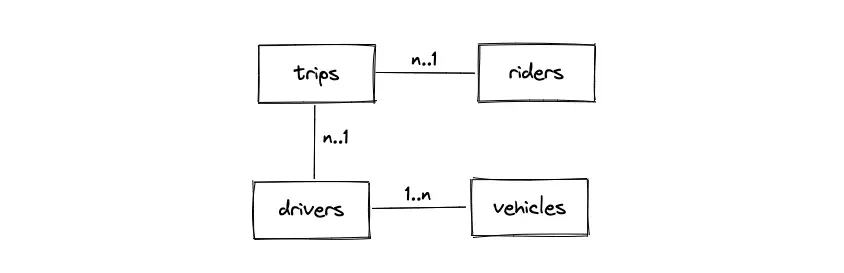
- The primary entities are the riders, the drivers, the vehicles, and the trips tables
- The relationship between the drivers and the vehicles table is 1-to-many
- The relationship between the drivers and trips table is 1-to-many
- The relationship between the riders and trips table is 1-to-many
- The trips table is a join table to represent the relationship between the riders and the drivers
Type of data store
- The wide-column data store (LSM tree-based) such as Apache Cassandra is used to persist the time-series location data of the client (driver and rider)
- The cache server such as Redis is used to store the current location of the driver and the rider for quick lookups
- Message queue such as Apache Kafka is used to handle the heavy traffic
- A relational database such as Postgres stores the metadata of the users
High-level design
- The DNS redirects the requests from the client (rider and driver) to nearby data centers
- The client (rider and driver) updates the data stores with Geohash of their real-time location
- WebSocket is used for real-time bidirectional communication between the rider and the driver
- Consistent hashing is used to partition the data stores geographically
Write Path
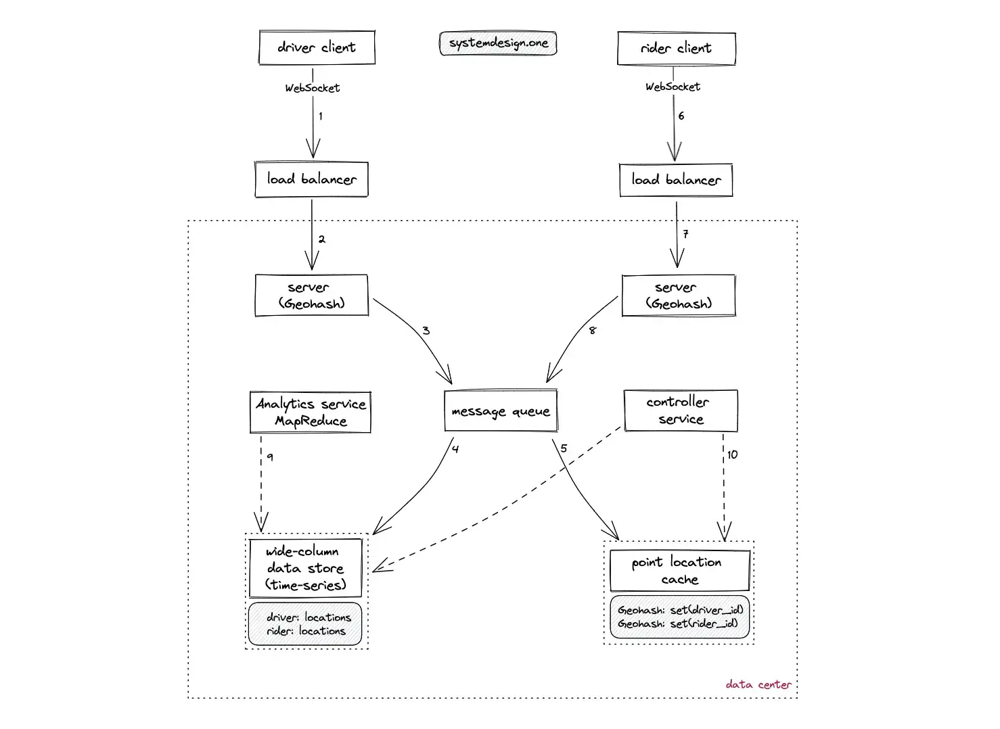
- The client (driver) creates a WebSocket connection on the load balancer to publish the current location (latitude, longitude) of the driver in real-time
- The load balancer uses the round-robin algorithm to delegate the client’s connection to a server with free capacity in the nearby data center
- The Geohash of the driver location is persisted on the message queue to handle the heavy traffic
- The Geohash of the driver location is stored on the wide-column data store for durability
- The Geohash is stored on the point location cache to provide real-time location updates
- The client (rider) creates a WebSocket connection on the load balancer to publish the current location (latitude, longitude) of the rider in real-time
- The load balancer uses the round-robin algorithm to delegate the client’s connection to a server with free capacity in the nearby data center
- The Geohash of the rider location is persisted on the message queue to handle the heavy traffic
- The analytics service (MapReduce based) queries the wide-column data store to generate offline analytics on the trip data
- The controller service prevents hot spots by auto-repartitioning the stateful services
- The point location cache is denormalized by the generation of multi-character Geohash to improve the read performance (provides zoom functionality)
- The server holding the rider’s WebSocket connection queries the point location cache to identify the available nearby drivers
- As a naive approach, the euclidean distance can be used to find the nearest vehicles within a Geohash
- Sharding of the services can be implemented on multiple levels such as the city level, geo sharding for further granularity, and the product level (capacity of the vehicle)
- The hot spots are handled through replication and further partitioning of the stateful services by the driver ID
- The wide-column data store is optimized for writes while the cache server is optimized for reads
- The wide-column data store is replicated across multiple data centers for durability
- The LRU policy is used to evict the cache server
Read Path
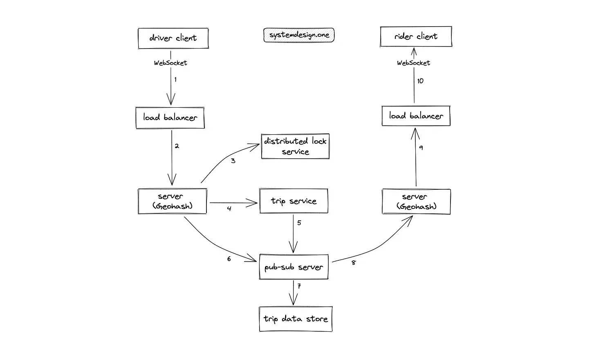
- The client (driver) creates a WebSocket connection on the load balancer to receive updates on trip requests in real-time
- The load balancer uses the round-robin algorithm to delegate the client’s connection to a server with free capacity in the nearby data center
- The server holding the driver’s WebSocket connection must acquire a distributed lock to handle concurrency issues when accepting trip requests from concurrent unique riders
- The server holding the driver’s WebSocket connection invokes the trip service to confirm the trip
- The trip service queries the pub-sub server to create a one-to-one communication channel between the driver and the rider
- The server publishes the location updates by the driver on the pub-sub server
- The pub-sub server persists the driver’s location data on the trip data store for durability
- The pub-sub server delegates the location updates by the driver to the server that is holding the rider’s WebSocket connection using the publish-subscribe pattern
- The server delegates the driver’s location update to the load balancer that holds the rider’s WebSocket connection
- The driver’s location updates are published to the rider
- The state of the trip is cached on the client (rider and driver) for a fallback to another data center
- Chaos Engineering can be used for resiliency testing
- Services gossip protocol the state for high availability
Further system design learning resources
Download my system design playbook for free on newsletter signup:
Google Maps
The popular implementations of the navigation service are the following:
- Google Maps
- OpenStreetMap
- Bing Maps
Requirements
- The user (client) can find the nearby points of interest within a given radius
- The client can find the real-time estimated time of arrival (ETA) between two locations
- The client receive suggestions on the possible routes between the two locations
Data storage
Database schema
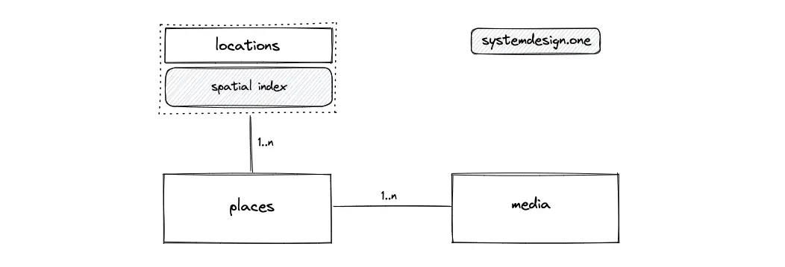
- The primary entities are the locations, the places, and the media tables
- The relationship between the locations and the places table is 1-to-many
- The relationship between the places and the media table is 1-to-many
- The spatial index using Geohash or R-tree is created on the locations table
Type of data store
- SQL database such as Postgres persists the location data (latitude, longitude) and the vector tiles
- The PostGIS extension of Postgres is used to generate the spatial index
- The wide-column data store (LSM tree-based) such as Apache Cassandra is used to persist the trip data for high write throughput
- A cache server such as Redis is used to store the popular routes and the road segments
- A message queue such as Apache Kafka is used to handle heavy traffic
- The message queue is also configured as the pub-sub server
- NoSQL document store such as MongoDB is used to store the metadata of the road segments
- The media files and raster tiles are stored in a managed object storage such as AWS S3
- The CDN caches the popular tiles and the media files
- Lucene-based inverted-index data store such as Apache Solr is used to store the index data of locations
High-level design
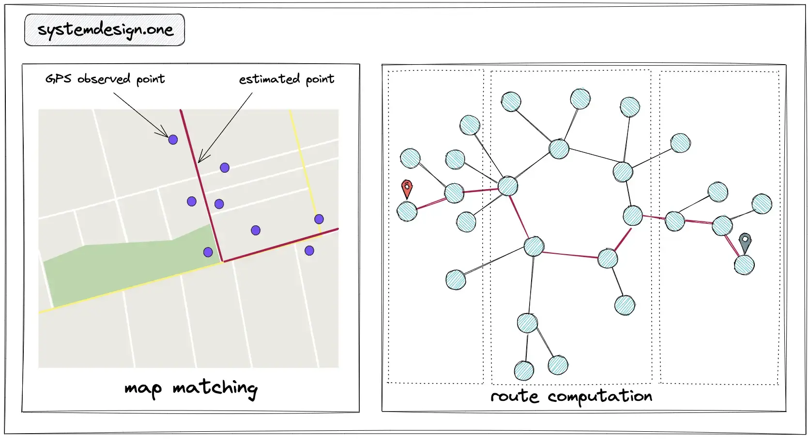
- Calculation of ETA is the shortest path in a directed weighted graph problem
- The graph is partitioned and the routes are precomputed for scalability
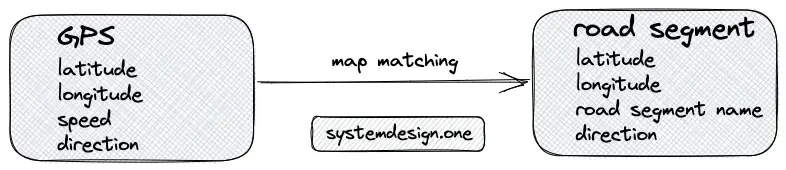
- The map matching is performed to improve the accuracy of ETA
- The Kalman filter is used for map matching
- The cache and data stores are replicated and sharded geographically through consistent hashing to handle hot spots
- Monitoring and fallback can be configured for high availability
Points of Interest
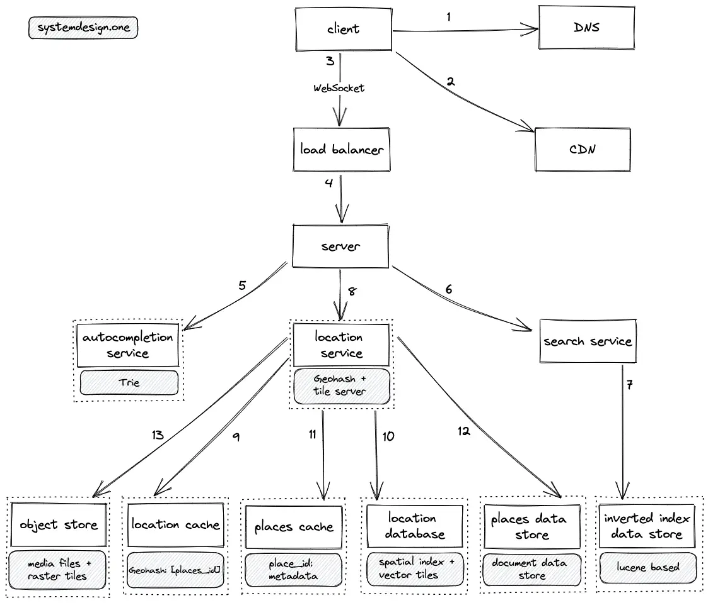
- The client executes a DNS query to resolve the domain name
- The client queries the CDN to check if the nearby points of interest are cached on the CDN
- The client creates a WebSocket connection on the load balancer for real-time updates
- The load balancer delegates the client’s connection to a server with free capacity
- The server queries the trie server to provide autocompletion functionality
- The server delegates the search query of the client to the search service
- The search service queries the inverted index data store to find the relevant locations
- The server delegates the points of interest query from the client to the location service
- The location service calculates the Geohash from the request and queries the location cache to fetch the list of nearby points of interest IDs
- The location database (replica) is queried on a cache miss
- The location service queries the places cache to fetch the metadata of a place
- The places data store (replica) is queried on a cache miss
- The location service queries the object store to fetch the relevant media files and the raster tiles
- The tile server on the location service provides SQL functionality on vector tiles
- LRU policy is used to evict the cache
- GPS signals are not accurate for the identification of the static location due to the multipath effect (reflection from a building)
- The WiFi access point is used in addition to GPS signals to find the static location of a client accurately
- The map is displayed on a web browser by placing multiple smaller vector tiles and raster tiles next to each other to make up a single bigger picture
- The raster tiles (png, jpg) are useful for off-road trajectories to speed up the loading of detected map errors
- Vector tiles allow the reduction of bandwidth by restricting data transfer to the current viewport and zoom level
- Vector tiles allow to apply styling on the fly on the client and thereby reduce the server load
- Vector tiles transfer the vector information (path and polygon) instead of transferring the image tiles
- Vector information is grouped into tiles for caching and partitioning
- The tiles can be pre-generated and cached to improve latency
- Each zoom level shows a unique set of tiles with a different granularity of information
- The number of tiles doubles when the user zooms out
- Geohash is used to identify the tile on the map
- The viewport of the client encloses the container that assigns absolute positions to the tiles
- The container is moved when the user pans the map
- Street view and satellite imagery are used to identify places in the world
Estimated Time of Arrival
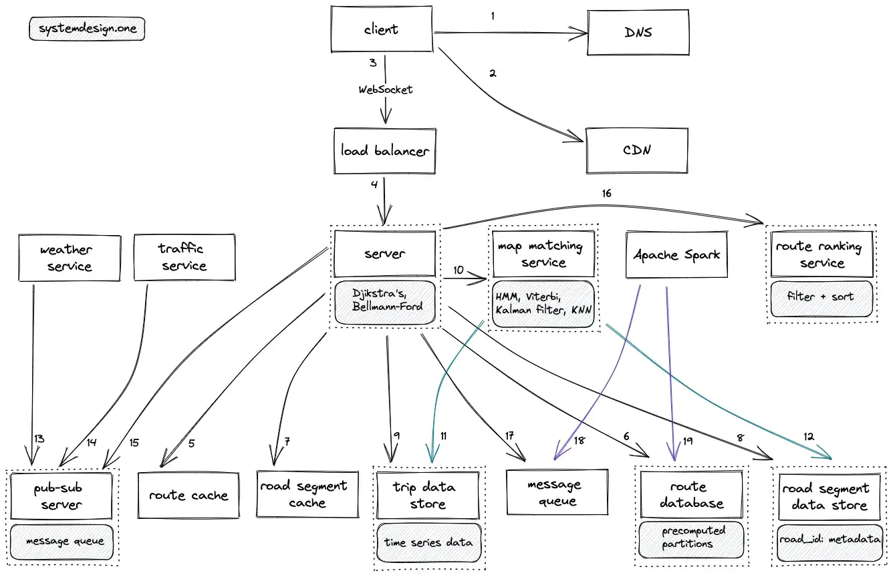
- The client executes a DNS query to resolve the domain name
- The client queries the CDN to check if the requested route is cached on the CDN
- The client creates a WebSocket connection on the load balancer for real-time bi-directional communication on ETA, trip, and traffic data
- The load balancer delegates the client’s request to a server with free capacity
- The server queries the route cache to fetch the list of possible routes to the destination
- The route database (replica) is queried on a cache miss
- The server queries the road segment cache to fetch the metadata of the road segments on the suggested route
- The road segment data store (replica) is queried on a cache miss
- The server queries the trip data store to recalculate the real-time ETA
- The server queries the map-matching service to calculate the ETA accurately
- The map-matching service queries the trip data store to fetch the list of recent GPS signals
- The map matching service queries the road segment data store to identify the nearest road segments
- The weather service publishes the latest weather data on the pub-sub server
- The traffic service (HyperLogLog based) publishes the latest traffic data on the pub-sub server
- The server fetches the latest weather and traffic data using the publish-subscribe pattern
- The server queries the route ranking service to filter and sort the result
- The server publishes the GPS signals on the message queue for asynchronous processing
- Apache Spark executes jobs on the trip data to detect changes in roads, hot spots, and traffic patterns
- Apache Spark job asynchronously updates the route database with any detected changes
- The physical map is represented as a graph with road segments as the directed edges and road intersections as the nodes
- The route between the origin and destination on the road network should be calculated in the least cost (function of time and distance)
- Map matching is the problem of matching the raw GPS signals to the relevant road segments
- The embedded sensors on the smartphones are used to geo-localize the users
- The graph can be partitioned to pre-compute the possible routes within the partitions with a time complexity of sqrt(n), where n = number of road intersections
- The partitions can be created on different granularities (country, city) to improve the latency of long-distance queries
- The interactions are applied on the boundaries of the partitions to improve the accuracy and scalability
- Dijkstra’s algorithm (sub-optimal due to scalability) provides a time complexity of O(nlogn) for route calculation, where n = number of road intersections
- The shortest path algorithm on the weighted graph such as the Bellman-Ford provides a time complexity of O(ve) for route calculation, where v = number of vertices and e = number of edges
- The edge weight of the graph is populated with weather and traffic data
- The popular partitions and routes can be cached to improve the latency
- Alternate routes can be suggested if applying the weather and traffic data on the shortest distanced route returns a delayed ETA
- The time series data (seasonality), map data, routing, and machine learning can be used to predict the ETA
- Viterbi algorithm (dynamic programming) can be used to identify the most probable sequence of road segments using a sequence of GPS signals
- Alternatively, the KNN algorithm with a minimum radius (k = 2) can be executed on the Geohash to identify the closest road segments
- The marginalized particle filter running on an unscented Kalman filter is used for real-time map matching
- Kalman filter is an optimal algorithm that uses multiple GPS signals to estimate the accurate road segment of the client
- Kalman filter is also applied to the seasonality of the time series data
- Additional data types such as traffic and weather can be added to marginalized particle filter
- Machine learning on the time series historical data helps to predict traffic conditions
Further system design learning resources
Download my system design playbook for free on newsletter signup:
YouTube
The popular implementations of an on-demand video streaming service are the following:
Requirements
- The user (client) can upload video files
- The user can stream video content
- The user can search for videos based on the video title
Data storage
Database schema
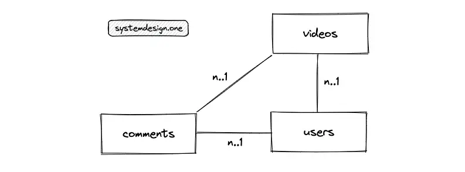
- The primary entities are the videos, the users, and the comments tables
- The relationship between the users and the videos is 1-to-many
- The relationship between the users and the comments table is 1-to-many
- The relationship between the videos and the comments table is 1-to-many
Type of data store
- The wide-column data store (LSM tree-based) such as Apache HBase is used to persist thumbnail images for clumping the files together, fault-tolerance, and replication
- A cache server such as Redis is used to store the metadata of popular video content
- Message queue such as Apache Kafka is used for the asynchronous processing (encoding) of videos
- A relational database such as MySQL stores the metadata of the users and the videos
- The video files are stored in a managed object storage such as AWS S3
- Lucene-based inverted-index data store such as Apache Solr is used to persist the video index data to provide search functionality
High-level design
- Popular video content is streamed from CDN
- Video encoding (transcoding) is the process of converting a video format to other formats (MPEG, HLS) to provide the best stream possible on multiple devices and bandwidth
- A message queue can be configured between services for parallelism and improved fault tolerance Codecs (H.264, VP9, HEVC) are compression and decompression algorithms used to reduce video file size while preserving video quality
- The popular video streaming protocols (data transfer standard) are MPEG-DASH (Moving Pictures Experts Group - Dynamic Adaptive Streaming over HTTP), Apple HLS (HTTP Live Streaming), Microsoft Smooth Streaming, and Adobe HDS (HTTP Dynamic Streaming)
Video upload workflow
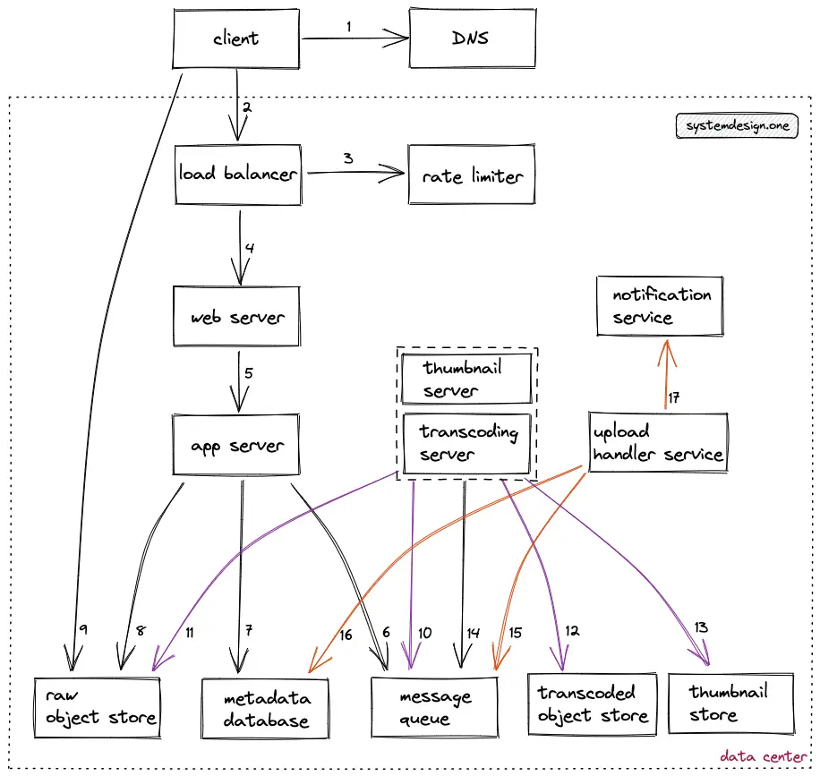
- The user (client) executes a DNS query to identify the server
- The client makes an HTTP connection to the load balancer
- The video upload requests are rate limited to prevent malicious clients
- The load balancer delegates the client’s request to an API server (web server) with free capacity
- The web server delegates the client’s request to an app server that handles the API endpoint
- The ID of the uploaded video is stored on the message queue for asynchronous processing of the video file
- The title and description (metadata) of the video are stored in the metadata database
- The app server queries the object store service to generate a pre-signed URL for storing the raw video file
- The client uploads the raw video file directly to the object store using the pre-signed URL to save the system network bandwidth
- The transcoding servers query the message queue using the publish-subscribe pattern to get notified on uploaded videos
- The transcoding server fetches the raw video file by querying the raw object store
- The transcoding server transcodes the raw video file into multiple codecs and stores the transcoded content on the transcoded object store
- The thumbnail server generates on average five thumbnail images for each video file and stores the generated images on the thumbnail store
- The transcoding server persists the ID of the transcoded video on the message queue for further processing
- The upload handler service queries the message queue through the publish-subscribe pattern to get notified on transcoded video files
- The upload handler service updates the metadata database with metadata of transcoded video files
- The upload handler service queries the notification service to notify the client of the video processing status
- The database can be partitioned through consistent hashing (key = user ID or video ID)
- Block matching or Phase correlation algorithms can be used to detect the duplicate video content
- The web server (API server) must be kept stateless for scaling out through replication
- The video file is stored in multiple resolutions and formats in order to support multiple devices and bandwidth
- The video can be split into smaller chunks by the client before upload to support the resume of broken uploads
- Watermarking and encryption can be used to protect video content
- The data centers are added to improve latency and data recovery at the expense of increased maintenance workflows
- Dead letter queue can be used to improve fault tolerance and error handling
- Chaos engineering is used to identify the failures in networks, servers, and applications
- Load testing and chaos engineering are used to improve fault tolerance
- RAID configuration improves the hardware throughput
- The data store is partitioned to spread the writes and reads at the expense of difficult joins, transactions, and fat client
- Federation and sharding are used to scale out the database
- The write requests are redirected to the leader and the read requests are redirected to the followers of the database
- Vitess is a storage middleware for scaling out MySQL
- Vitess redirects the read requests that require fresh data to the leader (For example, update user profile operation)
- Vitess uses a lock server (Apache Zookeeper) for automatic sharding and leader election on the database layer
- Vitess supports RPC-based joins, indexing, and transactions on SQL database
- Vitess allows to offload of partitioning logic from the application and improves database queries by caching
Video streaming workflow
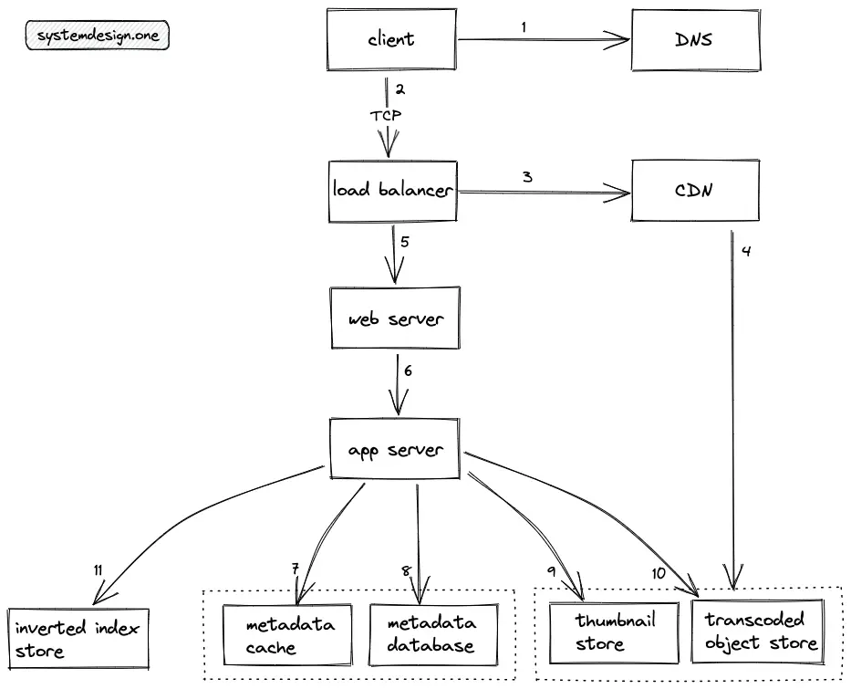
- The client executes a DNS query to identify the server
- The client makes an HTTP connection on the load balancer
- The CDN is queried to verify if the requested video content is on the CDN cache
- The CDN queries the transcoded object store on a cache miss
- The load balancer delegates the client’s request to a web server with free capacity using the weighted round-robin algorithm
- The web server delegates the client’s request to an app server using consistent hashing
- The app server queries the metadata cache to fetch the metadata of the video
- The app server queries the metadata database on a cache miss
- The app server queries the thumbnail store to fetch the relevant thumbnail images of the video
- The app server queries the transcoded object store to fetch the video content
- The app server delegates the search queries of the client to the inverted index store
- The read and write traffic are segregated for high throughput
- Popular video content is streamed from CDN (in memory)
- The push CDN model can be used for caching videos uploaded by users with a significant number of subscribers
- The moderately streamed video content can be served from the video server directly (disk IO)
- Consistent hashing can be used to load balance cache servers
- Caching can be implemented on multiple levels to improve latency
- LRU cache eviction policy can be used
- Entropy or jitter is implemented on cache expiration to prevent the thundering herd failure
- The video files are distributed to the data centers closer to the client when the client starts streaming
- The traffic should be prioritized between the video streaming cluster (higher priority) and the general cluster to improve reliability
- The videos can be recommended to the client based on geography, watch history (KNN algorithm), and A/B testing results
- The video file is split into chunks for streaming and improved fault tolerance
- The chunks of a video file are joined together when the client starts streaming
- The video chunks allow adaptive streaming by switching to lower-quality chunks if the high-quality chunks are slower to download
- Different streaming protocols support different video encodings and playback players
- The video content is streamed on TCP through buffering
- The video offset is stored on the server to resume playback from any client device
- The video resolution on playback depends on the client’s device
- The video file should be encoded into compatible bitrates (quality) and formats for smoother streaming and compatibility
- The counter for likes on a video can be non-accurate to improve performance (transactions executed at sampled intervals)
- The comments on video content are shown to the comment owner by data fetching from the leader (database) while other users can fetch from followers with a slight delay
- The services can be prescaled for extremely popular channels as autoscaling might not meet the requirements of concurrent clients
- The autoscaling requirements can be predicted by performing machine learning on traffic patterns
- The autoscaling service should keep a time buffer due to the anticipated delays in the provisioning of resources
- Fully baked container images (no additional script execution required after provisioning) improve the startup time of services
- The infrastructure can be prewarmed before the peak hours using benchmark data through load testing
- The emergency mode should shut down non-critical services to free up resources, and skip the execution of failed services for improved reliability
Further system design learning resources
Download my system design playbook for free on newsletter signup:
Dropbox
The popular file hosting services are the following:
- Dropbox
- Google Drive
- OneDrive
- iCloud
Requirements
- The client (user) can upload and download files on any device
- The client can share files or directories with other clients
- The client can edit the files while offline
- The file changes are automatically synchronized across devices
- The operations on files are ACID compliant
Data storage
Database schema
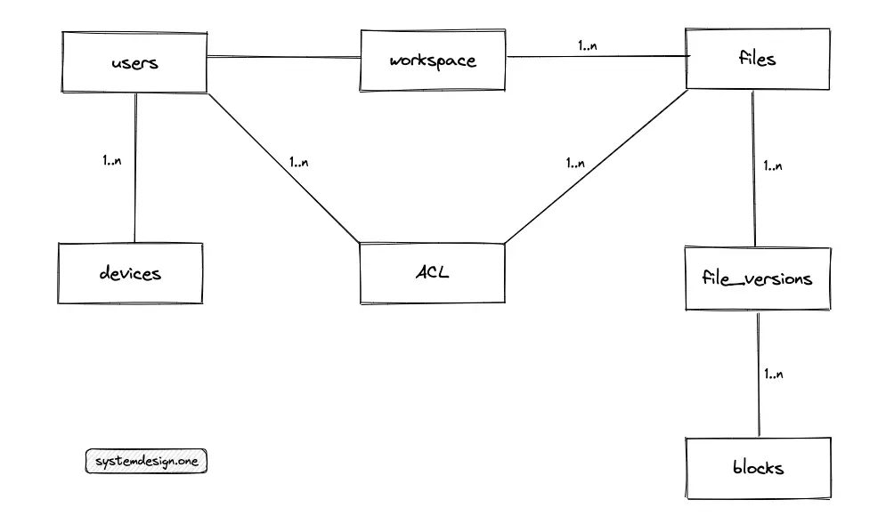
- The ACL (access control list) table is used to define file permissions
- The relationship between the users and the devices tables is 1-to-many
- The relationship between the users and the ACL tables is 1-to-many
- The relationship between the files and the ACL tables is 1-to-many
- The relationship between the workspace and the files tables is 1-to-many
- The relationship between the files and the file_versions tables is 1-to-many
- The relationship between the file_versions and the blocks tables is 1-to-many
Type of data store
- An embedded SQL database such as SQLite can be used as the metadata database on the client
- A SQL database such as MySQL stores the metadata on users, and files
- A cache server such as Redis stores the metadata and file blocks of frequently accessed files
- An object store can be used to store the file blocks
- The message queue such as Apache Kafka is used for synchronization across devices using the request-response pattern
High-level design
- The files are chunked into blocks of size 4 MB for storage
- The device-A of the client uploads file blocks and commits the metadata
- A long polling connection is maintained by device-B of the client to get notified of any file changes
- The device-B of the client fetches the updated metadata and the relevant file blocks
- Only the updated file blocks should be transferred to save bandwidth
Upload workflow
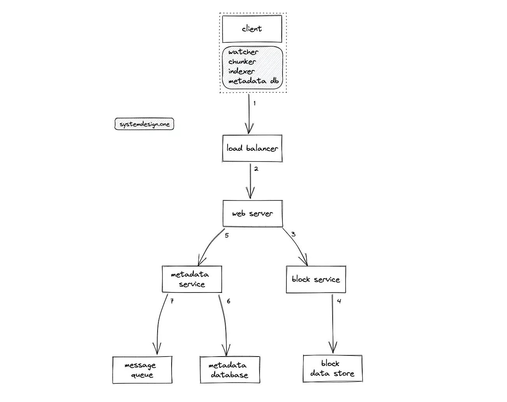
- The client creates an HTTP connection on the load balancer to upload the file
- The load balancer delegates the client’s HTTP connection to a web server with free capacity using round robin algorithm
- The web server delegates the file upload request to the block service
- The block service persists the file blocks on the block data store
- The web server delegates the file metadata change request to the metadata service
- The metadata service persists the modified metadata on the metadata database
- The metadata service puts a message on the message queue to notify other devices of the client of file changes
- Optimistic locking can be used for concurrent updates on the same file
- The metadata database stores the metadata of the user and the file blocks (useful for offline editing)
- The metadata database can be partitioned using consistent hashing (key = user-id or file-id)
- The file deduplication can be performed inline optimally by the client through hashing of the file blocks
- Alternatively, the server can perform the deduplication of file blocks at the expense of increased bandwidth and storage
- The file conflicts on concurrent writes can be resolved through the last-write-wins policy or manual resolution by the client
- The least recently accessed files can be archived and moved to a cold data store to save storage
- The client’s indexer service updates the internal metadata database
- The client’s chunker service splits the file into blocks and each block is identified by a unique hash value
- The client’s metadata database contains metadata on the files, file chunks, file versions, and the file path
- The file versioning can be implemented using SHA-256 hash or checksum on files
- The file blocks are compressed using gzip or bzip2 to save storage and bandwidth
- The client encrypts the file blocks using the 128-bit AES algorithm
- The client uploads file patches on small changes to files
- Exponential backoff is used to improve fault tolerance
- The block data store is replicated to improve availability and durability
Download workflow
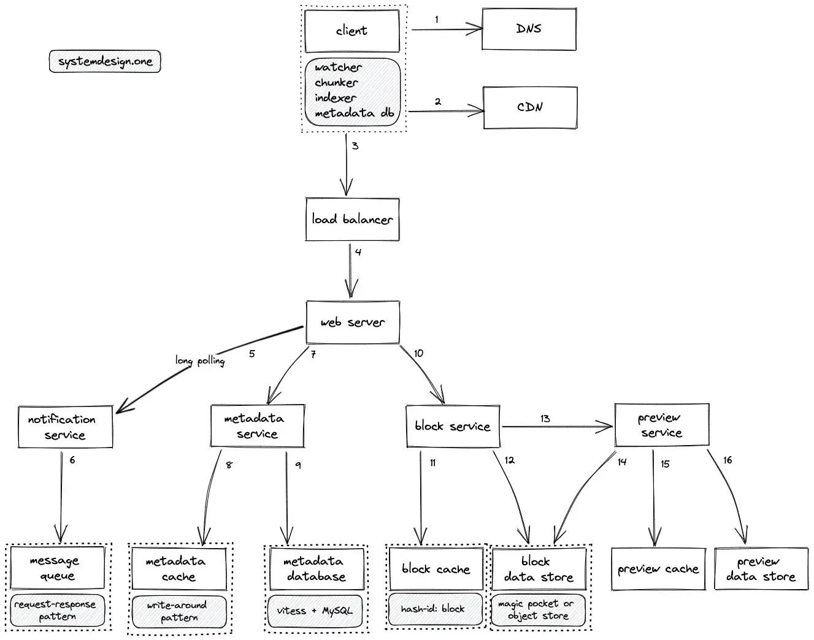
- The client executes a DNS query to resolve the domain name
- The client queries the CDN to check if the most frequently accessed files are on the cache
- The client initiates an HTTP connection on the load balancer to fetch the file
- The load balancer delegates the client’s HTTP connection to a web server with free capacity
- A long polling connection is maintained by the client to get notified of any file changes in real-time
- The notification service queries the message queue for any file changes using the request-response pattern
- The web server queries the metadata service to fetch the modified metadata on any file changes
- The metadata service queries the metadata cache
- The metadata database is queried on a cache miss
- The web server queries the block service to fetch the modified file blocks
- The block service queries the block cache
- The block data store is queried on a cache miss
- The block service queries the preview service to fetch the preview (screenshot) of the files
- The preview service asynchronously queries the block store to generate a preview of the stored files
- The preview service queries the preview cache to fetch the preview of recently accessed files
- The preview data store is queried on a cache miss
- LRU cache eviction policy can be used for cache servers
- The cached previews are stored in an encrypted format for security
- Thin clients such as mobile users can perform on-demand synchronization with remote servers to save bandwidth
- The client can use long polling, HTTP/2, or SSE to receive updates from the server in real-time
- The notification service can be implemented using the request-response pattern on the message queue
- The request queue is a global queue that receives updates from all devices while the response queues are dedicated to each device and the messages are removed on delivery
- A local search index is generated for searching the files
- The ACL table is modified when the user shares a file with another user
- The client’s watcher service detects file changes on the workspace for automated synchronization
- The client’s indexer service communicates with the remote notification service
- The client’s chunker service joins the file blocks on the read operation to reconstruct the file
What to learn next?
Download my system design playbook for free on newsletter signup:
License
CC BY-NC-ND 4.0: This license allows reusers to copy and distribute the content in this article in any medium or format in unadapted form only, for noncommercial purposes, and only so long as attribution is given to the creator. The original article must be backlinked.
Useful Resources
- infoq.com
- system design primer, GitHub.com
- leetcode discussions on system design, leetcode.com
- papers we love, GitHub.com
- w3schools SQL Tutorial, w3schools.com
- system design, roadmap.sh